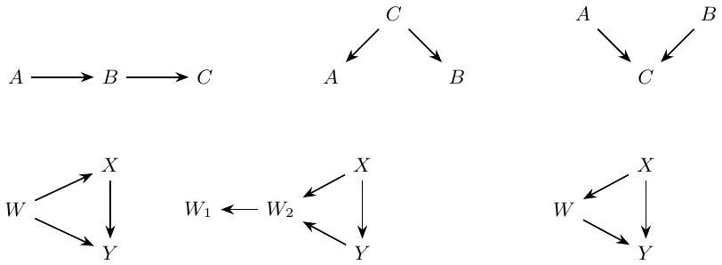
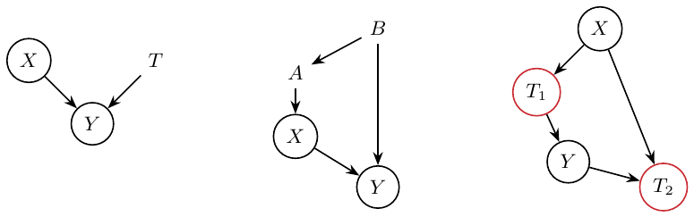
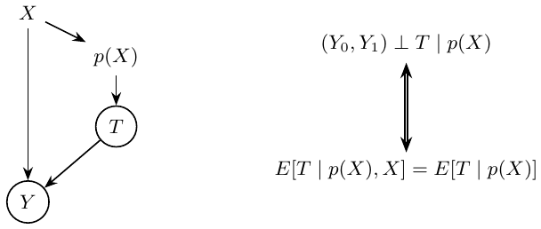
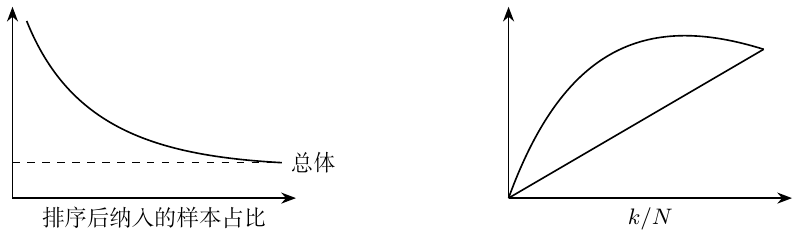
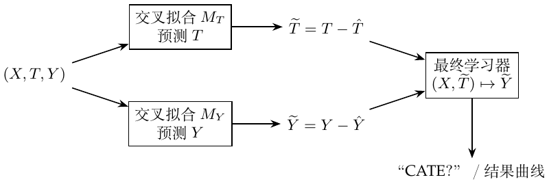
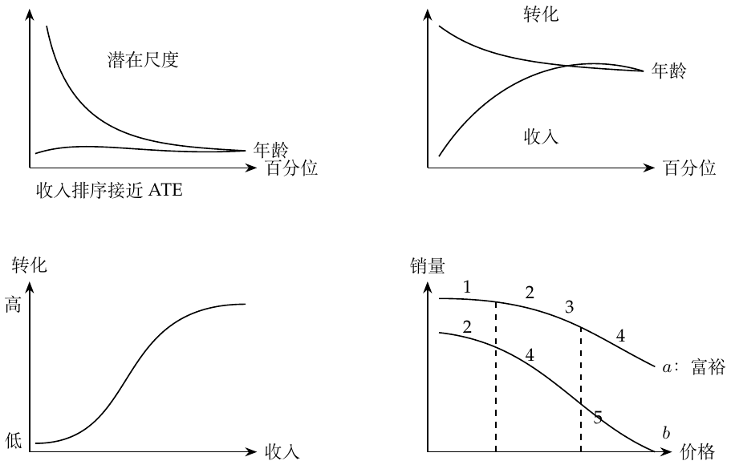
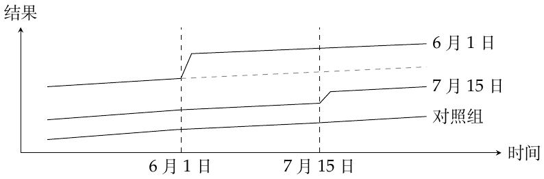
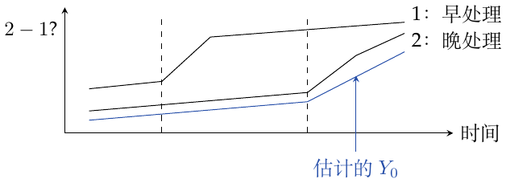
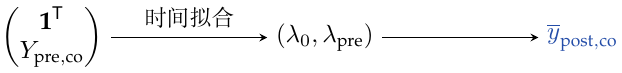
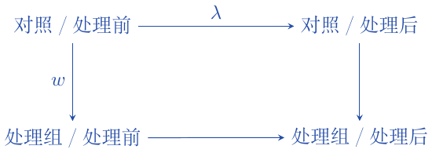

原扫描第4页：二元处理回归，保留原图的负斜率。
Color preview of the reviewed Markdown. Formulas require MathJax network access; the PDF is self-contained.
原扫描页码：Chapter1-23.pdf, p. 1
\(T_i\) 表示是否接受处理，\(Y_i\) 是观测结果。笔记把“现实（分组）”与“真相”作了区分。 \[\mathrm{ATE}=E[Y_1-Y_0],\qquad \mathrm{ATT}=E[Y_1-Y_0\mid T=1].\] ATE 是平均处理效应；ATT 是已接受处理者的平均处理效应。因果量来自潜在结果之差。观测到的相关关系可分解为 \[\underbrace{E[Y\mid T=1]-E[Y\mid T=0]}_{\textcolor{blue}{\text{相关关系}}} =\underbrace{E[Y_1-Y_0\mid T=1]}_{\textcolor{blue}{\mathrm{ATT}}} +\underbrace{E[Y_0\mid T=1]-E[Y_0\mid T=0]}_{\textcolor{blue}{\text{偏差}}}.\]
我的批注。 偏差为零时，相关关系代表 ATT；再用箭头把 ATT 连到 \(E[Y_1-Y_0]\)，标作“因果关系”。
原笔记的指向关系。
偏差 \(=0\)：相关关系代表 ATT \(\textcolor{blue}{\longrightarrow}\) \(\mathrm{ATT}\)
可转为因果关系（原笔记箭头） \(\textcolor{blue}{\longrightarrow}\) \(E[Y_1-Y_0]\)；条件见下方校注
补充条件／待确认（B1-004）：选择偏差为零识别的是 ATT，不一定是 ATE
来源：Chapter1-23.pdf, pp. 1
这条箭头确实出现在原笔记的蓝色批注中。\(E[Y_0\mid T=1]-E[Y_0\mid T=0]\) 为零时，相关关系 \(=\mathrm{ATT}\)。若要进一步把 ATT 换成 ATE，还需 \(E[Y_1-Y_0\mid T=1]=E[Y_1-Y_0]\)；处理与两个潜在结果均独立的随机分配是一个充分条件。实际上，\(\mathrm{ATE}=P(T=1)\mathrm{ATT}+P(T=0)\mathrm{ATU}\)。
参考： 教材第1章.
原扫描页码：Chapter1-23.pdf, p. 1
随机实验可以消除偏差。图中把已有条件与潜在结果的联系（需要消除）和处理与观测结果的联系（需要研究）分开。RCT 给出
\[(Y_0,Y_1)\perp T,\qquad E[Y_0\mid T=0]=E[Y_0\mid T=1]=E[Y_0],\] 因此选择偏差项为零。
原笔记的指向关系。
RCT 提供这一条件 \(\textcolor{blue}{\longrightarrow}\) \((Y_0,Y_1)\perp T\)
需要消除的联系 \(\textcolor{blue}{\longrightarrow}\) 已有条件 \(\longrightarrow\) 潜在结果
需要研究的联系 \(\textcolor{blue}{\longrightarrow}\) 处理 \(\longrightarrow\) 观测结果
原扫描页码：Chapter1-23.pdf, p. 2
估计量的标准误写作 \(\mathrm{SE}=\hat\sigma/\sqrt n\)，其中 \[\hat\sigma^2=\frac{1}{N-1}\sum_i(x_i-\bar x)^2.\] 样本量更小 \(\Rightarrow\) 标准误更大 \(\Rightarrow\) 置信区间更宽。原假设是处理组与对照组的分布均值相等。两组各自的置信区间即使重叠，均值之差仍可能显著不为零。蓝色批注区分了两组均值各自的 95% 置信区间与两组均值之差。
笔记把 \(p\) 值写作 \(P(\text{data}\mid H_0)\)：在 \(H_0\) 下，观测到当前数据或更极端数据的概率，并提醒第一类错误。置信水平被描述为估计值与总体参数之差不超过某一范围的概率。置信水平更高 \(\Rightarrow\) 区间更宽 \(\Rightarrow\) 精度更低。显著性水平是第一类错误的概率。
我的直觉。 若 \(p\) 值很小，那么在 \(H_0\) 下极不容易出现的数据却出现了，说明 \(H_0\) 可能不对。把样本算出的 \(p\) 值与理论上预先选定的显著性水平比较。
原笔记的指向关系。
\(\mathrm{SE}=\hat\sigma/\sqrt n\) \(\textcolor{black}{\longrightarrow}\) \(\hat\sigma^2=(N-1)^{-1}\sum_i(x_i-\bar x)^2\)
各自的置信区间 \(\textcolor{blue}{\longrightarrow}\) \(T=1\) 或 \(T=0\) 组均值的 95% 置信区间
差值仍可能显著 \(\textcolor{blue}{\longrightarrow}\) 两组均值之差
补充条件／待确认（B1-005）：抽样概率与置信区间覆盖率
来源：Chapter1-23.pdf, pp. 2
原笔记的简写需结合抽样来理解。对于独立同分布样本的均值，\(\widehat{\mathrm{SE}}(\bar X)=s/\sqrt n\)；这不是所有估计量通用的标准误。\(p\) 值是 \(P_{H_0}\{S\text{ 至少与 }S_{\rm obs}\text{ 一样极端}\}\)，不是 \(P(H_0\mid\text{data})\)。95% 置信区间程序的重复抽样覆盖率为 \(P_\theta\{\theta\in C(X)\}=0.95\)。小 \(p\) 值提供反对原假设的证据，并不从逻辑上证明原假设为假。
参考： 教材第3章.
原扫描页码：Chapter1-23.pdf, p. 3
\(A\to B\) 表示 \(A\) 影响 \(B\)；依赖关系沿箭头传递。
链：\(A\to B\to C\)。边际上 \(A\not\perp C\)；给定已知的中间变量 \(B\) 后，路径被阻断：\(A\perp C\mid B\)。
叉：\(A\leftarrow C\to B\)。未条件化时，\(A\not\perp B\)；给定 \(C\) 后，\(A\perp B\mid C\)。
碰撞点：\(A\to C\leftarrow B\)。边际上 \(A\perp B\)；给定 \(C\) 后，\(A\not\perp B\mid C\)。
混杂偏差还可能涉及混杂因素的代理变量，以及不能直接测量的变量。
我的总结。 混杂偏差来自没有控制住的开放路径，例如 \(X\leftarrow W\to Y\)，同时存在 \(X\to Y\)。选择偏差来自多余的条件化：控制共同结果会打开路径，控制因果路径上的中间变量则会阻断部分因果作用。例子中 \(X\) 是教育，\(Y\) 是工资，\(W\) 是投资。碰撞点图为 \(X\to W_2\leftarrow Y\)、\(W_2\to W_1\) 和 \(X\to Y\)，“投资”写在 \(W_1\) 旁；中介图则是教育先影响 \(W\)，再影响工资，同时还有教育到工资的直接箭头。笔记说控制 \(W\) 对这里的分析也有负面影响。

原扫描第3页：链、叉、碰撞点；下方依次为混杂及两种不当控制。
原笔记的指向关系。
额外控制共同结果，打开路径 \(\textcolor{black}{\longrightarrow}\) 碰撞点 \(W_2\)，或其后代 \(W_1\)
额外控制，阻断部分因果路径 \(\textcolor{black}{\longrightarrow}\) \(X\to W\to Y\) 中的中介变量 \(W\)
补充条件／待确认（B1-006）：图上的分离与统计依赖
来源：Chapter1-23.pdf, pp. 3
以上是原笔记的三节点路径规则。在因果 Markov 性质下，若不存在其他开放路径，阻断路径可推出所写的独立关系。开放路径允许依赖，但若不另加忠实性（faithfulness）条件，并不必然产生依赖，因为效应可能相互抵消。调整中介变量会阻断部分总效应，属于过度控制；调整碰撞点则可能产生选择偏差。
参考： 教材第4章.
原扫描页码：Chapter1-23.pdf, p. 4
对个体 \(i\)，写作 \(Y_{1i}=Y_{0i}+k\)，目标是估计 \(k\)。一元回归为 \[Y_i=\beta_0+kT_i+u_i,\qquad \hat\beta_1=\frac{\operatorname{Cov}(Y_i,T_i)}{\operatorname{Var}(T_i)}.\] 图中的直线从 \(T=0\) 时的截距，连到 \(T=1\) 时的“截距加 \(k\)”（原图画的是负斜率）。当 \(T\) 随机分配时，其回归系数就是 ATE。
多元回归用来处理影响 \(T_i\) 的多个因素： \[y_i=\beta_0+kT_i+\beta_1X_{1i}+\cdots+\beta_KX_{Ki}+u_i.\] \(X\) 是辅助协变量。 此时 \[k=\frac{\operatorname{Cov}(Y_i,\widetilde T_i)}{\operatorname{Var}(\widetilde T_i)}.\]
我的批注。 先把 \(X\) 能解释的部分去掉，取残差 \(\widetilde T\)；剩下的就是 \(X\) 解释不了的部分。
本来需要多元回归，却在一元回归中漏掉变量时，考虑正确模型 \[\mathrm{Wage}_i=\alpha+k\,\mathrm{Educ}_i+A_i'\beta+u_i,\] 其中 \(A_i\) 是能力。遗漏变量的计算为 \[\frac{\operatorname{Cov}(\mathrm{Wage}_i,\mathrm{Educ}_i)}{\operatorname{Var}(\mathrm{Educ}_i)}=k+\beta'\delta_{\mathrm{Ability}}.\] \(\delta_A\) 是把能力对教育回归得到的系数向量。多出来的项就是遗漏变量偏差（OVB）。 若所有混杂因素都纳入，就没有 OVB。旁注： RCT 打破这层关系；回归则控制它，使其固定。
原扫描第4页：二元处理回归，保留原图的负斜率。
原笔记的指向关系。
先用 \(X\) 预测，再取无法解释的部分 \(\textcolor{blue}{\longrightarrow}\) \(\widetilde T=T-\widehat{E[T\mid X]}\)（此处为线性投影）
遗漏项是能力 \(\textcolor{blue}{\longrightarrow}\) \(A_i^{\prime}\beta\)
能力对教育回归 \(\textcolor{blue}{\longrightarrow}\) \(\delta_A\)
OVB：遗漏变量偏差 \(\textcolor{red}{\longrightarrow}\) \(\beta^{\prime}\delta_A\)
原笔记纠错（B1-007）：残差回归的方向
来源：Chapter1-23.pdf, pp. 4
原笔记黑色句子中的回归方向写反了，蓝色批注已指向正确做法。令 \(P_X\) 包含截距，取 \(\widetilde T=(I-P_X)T\)，则 \(\hat k=\widetilde T'Y/(\widetilde T'\widetilde T)\)。反过来把 \(X\) 对 \(T\) 回归，得不到这个残差。
参考： 教材第5章.
补充条件／待确认（B1-008）：回归调整仍需要因果识别条件
来源：Chapter1-23.pdf, pp. 4
纳入所有混杂因素，还需结合一致性、重叠性、条件可交换性及合适的调整模型。所写的 OVB 恒等式使用了 \(\operatorname{Cov}(\mathrm{Educ},u)=0\)。即使相关协变量都已测量，加性线性模型仍可能设定错误；在效应异质时，加入协变量也不会自动识别未加权的 ATE。
参考： 教材第5章.
原扫描页码：Chapter1-23.pdf, p. 5
异方差是指在不同协变量取值下，结果的方差不相同。分组越细，组内样本越少；分组减少变异，但系数标准误可能增大，\(t\) 统计量变小。各组的回归应按组内处理变量的方差加权。
处理为虚拟变量时（笔记举例：“是否为12年教育”）， \[\mathrm{wage}_i=\beta_0+\beta_1T_i+e_i.\] \(T=0\) 时，期望等于截距；\(T=1\) 时，等于截距加 \(\beta_1\)。IQ 为连续变量时， \[\mathrm{wage}_i=\beta_0+\beta_1T_i+\beta_2\mathrm{IQ}_i+\beta_3\mathrm{IQ}_iT_i+e_i.\]
\(\beta_0\)：\(T=0\)、IQ \(=0\) 时的期望。
\(\beta_1\)：IQ 为零时，\(T\) 增加一单位的影响（其他项均为零）。
\(\beta_2\)：\(T=0\) 时，IQ 增加一单位的影响。
\(\beta_3\)：\(T=1\) 时 IQ 也有回报；当 \(\beta_3>0\)，这一组的回归斜率更大。
分析 \(T_i\) 的系数，需要算各组对总系数的贡献：按教育年限分组（笔记以12年为例），求相应的类别教育／处理差异 \(C(\mathrm{educ})[T_i]\)。
有更多协变量时，目标系数是各虚拟变量子组效应的加权平均： \[E\!\left[\{E[Y_i\mid T=1,G_i]-E[Y_i\mid T=0,G_i]\}\,w(G_i)\right],\qquad w(G_i)\propto\operatorname{Var}(T_i\mid G_i).\] 权重取决于子组内 \(T_i\) 的分布。旁注要求求出教育分组和 IQ 分箱的处理差异。
原笔记的指向关系。
二元处理从0变为1 \(\textcolor{black}{\longrightarrow}\) 此回归中的 \(E[Y\mid T=1]-E[Y\mid T=0]=\beta_1\)
IQ 也改变 \(T=1\) 组的斜率 \(\textcolor{blue}{\longrightarrow}\) 交互项系数 \(\beta_3\)
补充条件／待确认（B1-009）：子组回归权重需归一化
来源：Chapter1-23.pdf, pp. 5
若每组有独立截距、共用一个处理系数，则 \(\beta=\sum_g P(G=g)v_g\tau_g/\sum_gP(G=g)v_g\)，其中 \(v_g=\operatorname{Var}(T\mid G=g)\)。等价地，原笔记外层期望中的权重为 \(w(g)=v_g/E[v_G]\)。这一般是按方差加权的效应，而不是通常的 ATE；因果解释还需要组内调整有效。
参考： 教材第6章.
原扫描页码：Chapter1-23.pdf, p. 6
本章讨论控制特定变量的后果。在 \(X\to Y\leftarrow T\) 中，研究 \(X\to Y\) 时控制 \(T\)，可以把 \(X\) 的作用看得更清楚，降低其估计方差。第二幅图是 \(B\to A\to X\to Y\) 及 \(B\to Y\)：\(A\) 只与 \(X\) 相关，\(B\) 则同时与 \(X\)、\(Y\) 相关。批注说加入仅与 \(X\) 相关的 \(A\) 会增大方差（原手写标的是 \(Y\) 的方差）。 \[\hat\sigma^2=\frac{1}{n-2}\sum_i(y_i-\hat y_i)^2,\qquad \operatorname{Var}(\hat\beta_2)=\frac{\hat\sigma^2}{\sum_i(x_i-\bar x)^2}.\] 旁边的黑色文字写道：“标准误与 \(X\) 的方差成反比。”样本的变化越大，标准误越小。
没有控制共同原因而产生的是混杂偏差；控制共同结果，或控制因果路径上的变量，会产生选择偏差。
若处理影响结果是否为零，RCT 下均值之差具有因果解释。笔记将其分为参与效应与正结果中的效应： \[\begin{align*} E[Y\mid T=1]-E[Y\mid T=0] ={}&\{P(Y>0\mid T=1)-P(Y>0\mid T=0)\}E[Y\mid Y>0,T=1]\\ &+\{E[Y\mid Y>0,T=1]-E[Y\mid Y>0,T=0]\}P(Y>0\mid T=0). \end{align*}\] 旁注把第一部分标为结果为正的概率变化，并区分顾客“是否参与”和“消费能力”。 只分析参与者时，
\[\begin{align*} E[Y_{i1}\mid Y_{i1}>0]-E[Y_{i0}\mid Y_{i0}>0] ={}&\underbrace{E[Y_{i1}-Y_{i0}\mid Y_{i1}>0]}_{\text{参与者中的因果效应}}\\ &+\underbrace{E[Y_{i0}\mid Y_{i1}>0]-E[Y_{i0}\mid Y_{i0}>0]}_{\text{选择偏差}}. \end{align*}\] 最后一项比较参与者与未参与者［批注结尾被扫描边缘截去］。
配图为 \(X\to T_1\to Y\to T_2\)，另有 \(X\to T_2\)。\(T_1,T_2\) 用红色标为不当选择／控制：“不要控制！”

原扫描第6页：改善精度的控制、处理变量的预测因素，以及红圈标出的不当控制。
原笔记的指向关系。
只与 \(X\) 有关；加入后增大方差（原文） \(\textcolor{blue}{\longrightarrow}\) 第二幅图中的 \(A\)
同时与 \(X\)、\(Y\) 有关 \(\textcolor{blue}{\longrightarrow}\) 第二幅图中的 \(B\)
不当控制：不要条件化 \(\textcolor{red}{\longrightarrow}\) 下方图中的中介 \(T_1\) 和碰撞点 \(T_2\)
参与效应 \(\textcolor{blue}{\longrightarrow}\) \(P(Y>0\mid T=1)-P(Y>0\mid T=0)\)
选择偏差 \(\textcolor{blue}{\longrightarrow}\) \(E[Y_0\mid Y_1>0]-E[Y_0\mid Y_0>0]\)
补充条件／待确认（B1-010）：精度、不当控制与参与行为
来源：Chapter1-23.pdf, pp. 6
在同方差的一元 OLS 中，\(\mathrm{SE}(\hat\beta)=\sigma/\sqrt{\sum_i(x_i-\bar x)^2}\)：标准误与处理变量变异的平方根成反比。多元回归应使用残差化后的处理变量和正确的残差自由度。这里的方差直觉针对处理效应估计量，并非说 \(\operatorname{Var}(Y)\) 本身发生了变化。参与效应分解假设 \(Y\ge0\)（或结果只可能为零和正数）；若无额外假设，两个代数分量不能分别解释为因果效应。
参考： 教材第7章.
原扫描页码：Chapter1-23.pdf, pp. 7–8
假设 \[Y_i=\beta_0+kT_i+\beta W_i+u_i,\] 其中 \(T\) 是处理，\(W\) 是混杂变量。当 \(W_i\) 不可观测时，拟合 \(Y_i=\beta_0+kT_i+v_i\)，其中 \(v_i=\beta W_i+u_i\)。此时 \(\operatorname{Cov}(T,v)\ne0\)，所以 \(k\) 的估计有偏。未观测项携带着联系 \(T\)、\(Y\) 的信息。
引入工具变量 \(Z\)：它与 \(T\) 相关，只通过 \(T\) 影响 \(Y\)，且 \(\operatorname{Cov}(Z,v)=0\)。图为 \(Z\to T\to Y\)、\(W\to T\)、\(W\to Y\)。因此 \[\begin{align*} \operatorname{Cov}(Z,Y)&=\operatorname{Cov}(Z,\beta_0+kT+v)\\ &=k\operatorname{Cov}(Z,T)+\operatorname{Cov}(Z,v)=k\operatorname{Cov}(Z,T),\\ k&=\frac{\operatorname{Cov}(Z,Y)}{\operatorname{Cov}(Z,T)} =\frac{\operatorname{Cov}(Y,Z)/\operatorname{Var}(Z)}{\operatorname{Cov}(T,Z)/\operatorname{Var}(Z)}. \end{align*}\] 分子、分母都是回归系数。分子是简约式（reduced form）系数：\(Z\) 只经过 \(T\) 对 \(Y\) 产生的影响。
我的微积分直觉。 \[k=\frac{dY/dZ}{dT/dZ}=\frac{dY}{dZ}\frac{dZ}{dT}=\frac{dY}{dT}.\] 若工具变量是二元的，Wald 估计量为 \[k=\frac{E[Y\mid Z=1]-E[Y\mid Z=0]}{E[T\mid Z=1]-E[T\mid Z=0]}.\] 笔记将其理解为：把 \(Z\to Y\) 的变化换算回 \(T\to Y\) 的作用。
例子中，\(Z_0\) 为 qob（出生季度），\(T\) 为教育，\(W\) 为能力，\(Y\) 为工资，另有变量 \(Z_1,Z_2\)。写出的要求是：(1) \(\operatorname{Cov}(Z,T)\ne0\)，可直接用数据检验；(2) \(Y\perp Z\mid T\)，后面打了问号，并写“\(Z\) 仅通过 \(T\) 影响 \(Y\)”。作者的红色更正：“不准确，Chapter 09 中更正。” 因此这里保留的是作者后来已否定的旧说法，而非认可这一条件独立假设。
先回归 \(T\sim Z_0\)，检查第一阶段关系；再回归 \(Y\sim Z_0\)，看简约式关系。方法一是取两个回归系数之比。方法二是 2SLS：
将 \(T\) 对 \(Z_0,Z_1,Z_2\) 回归。
将 \(Y\) 对拟合后的 \(T\) 及 \(Z_1,Z_2\) 回归；图中用 \((Z_0,Z_1,Z_2)\) 代指拟合后的 \(T\)。
代码旁注说可以指定 \(T\sim Z_0\)，因为其他项会在第二阶段自动加入。 用作比较的 OLS 写作 \(Y\sim T+C(Z_0,Z_1,Z_2)\)。
当 \(T\) 与 \(Z\) 的相关性很弱时，OLS 与 2SLS 的估计不同，标准误较大［末尾括号内的词无法辨清］。2SLS 在有限样本中偏向 OLS，偏差方向与 OLS 相同；2SLS 一致，而 OLS 不一致。工具变量越多，偏差越大；工具变量过多时，2SLS 越来越像 OLS。

原扫描第7–8页：工具变量、处理、混杂因素与结果。
原笔记的指向关系。
联系 \(T\)、\(Y\) 的信息 \(\textcolor{blue}{\longrightarrow}\) \(v_i=\beta W_i+u_i\)
简约式：\(Z\) 经过 \(T\) 影响 \(Y\) \(\textcolor{blue}{\longrightarrow}\) \(\operatorname{Cov}(Y,Z)/\operatorname{Var}(Z)\)
不准确；Chapter 09 中更正 \(\textcolor{red}{\longrightarrow}\) 原先提出的条件 \(Y\perp Z\mid T\)
原笔记纠错（B1-011）：排除限制不是观测结果的条件独立
来源：Chapter1-23.pdf, pp. 8
作者的红色更正是恰当的。排除限制是 \(Y(t,z)=Y(t)\)，并需结合工具变量外生性；一般并不是 \(Y\perp Z\mid T\)。图中条件化碰撞点 \(T\) 会打开 \(Z\to T\leftarrow W\to Y\)。因此，一个有效工具变量在给定处理后，仍可能与观测到的 \(Y\) 相关。
参考： 教材第9章.
补充条件／待确认（B1-012）：IV 比值与有限样本结论
来源：Chapter1-23.pdf, pp. 7, 8
在所写的常斜率模型中，协方差比值来自 \(\operatorname{Cov}(Z,v)=0\) 与非零的第一阶段。导数约分适合帮助理解一条可微的单一路径，不能作为随机、异质 IV 模型的一般证明。通常的 2SLS 一致性要求有效且足够强的工具变量，以及维数固定的常规渐近条件；弱工具或工具过多时，不能无条件声称一致。这里的 \(Z_1,Z_2\) 应理解为纳入的外生控制变量，在两个阶段都保留。
参考： 教材第8章.
原扫描页码：Chapter1-23.pdf, pp. 9–10
依从者（compliers）服从分配；从不接受者（never-takers）始终不接受处理；总是接受者（always-takers）始终接受处理；违抗者（defiers）则反着做。在 \(Z\to T\to Y\)、\(W\to T\) 和 \(W\to Y\) 中，从不接受者与总是接受者削弱第一阶段。蓝色直觉说明：例如从不接受者会把简约式中的结果差异拉向对照状态。
现在潜在结果有两个自变量：\(Y_i(t,z)\)；笔记以 \(T_i=1,Z_i=0\) 时的 \(Y_i(1,0)\) 为例。潜在处理 \(T_{0i}\) 对应 \(Z_i=0\)。
\((T_{0i},T_{1i})\perp Z_i\) 且 \((Y_i(T_{1i},1),Y_i(T_{0i},0))\perp Z_i\)。\(Z\) 与潜在处理无关，不同工具变量组中的人具有可比性。
排除限制：\(Y_i(1,0)=Y_i(1,1)=Y_{i1}\)，\(Y_i(0,0)=Y_i(0,1)=Y_{i0}\)。工具变量只能通过处理影响结果。
\(E[T_{1i}-T_{0i}]\ne0\)：存在第一阶段，工具变量确实会影响处理。
原扫描写作 \(T_{1i}>T_{0i}\)，并说明打开工具变量会提高接受处理的概率。
原笔记起初把下面的比值标为“ATE”： \[\frac{E[Y\mid Z=1]-E[Y\mid Z=0]}{E[T\mid Z=1]-E[T\mid Z=0]}.\] 利用排除限制和随机分配， \[\begin{align*} E[Y_i\mid Z_i=1]&=E[Y_{i0}+T_{i1}(Y_{i1}-Y_{i0})\mid Z_i=1]\\ &=E[Y_{i0}+T_{i1}(Y_{i1}-Y_{i0})],\\ E[Y_i\mid Z_i=0]&=E[Y_{i0}+T_{i0}(Y_{i1}-Y_{i0})]. \end{align*}\] 分子为 \[\begin{align*} E[(Y_{i1}-Y_{i0})(T_{i1}-T_{i0})] =E[Y_{i1}-Y_{i0}\mid T_{i1}>T_{i0}]P(T_{i1}>T_{i0}), \end{align*}\] 分母为 \(E[T_{i1}-T_{i0}]=P(T_{i1}>T_{i0})\)。所以比值为 \[E[Y_{i1}-Y_{i0}\mid T_{i1}>T_{i0}].\] 作者的红色批注：这个平均处理效应还附带一个条件：依从。 IV 只识别依从者的处理效应。依从者满足 \(T_{i1}>T_{i0}\)；从不接受者满足 \(T_{i1}=T_{i0}=0\)；总是接受者满足 \(T_{i1}=T_{i0}=1\)；违抗者与分配方向相反。
原笔记的指向关系。
从不接受者／总是接受者削弱第一阶段 \(\textcolor{blue}{\longrightarrow}\) \(Z\longrightarrow T\)
工具变量各组具有可比性 \(\textcolor{black}{\longrightarrow}\) 工具变量外生性假设
工具变量只通过处理影响结果 \(\textcolor{black}{\longrightarrow}\) \(Y_i(t,0)=Y_i(t,1)\)
这个条件表示依从 \(\textcolor{red}{\longrightarrow}\) 最终条件期望中的 \(T_{i1}>T_{i0}\)
原笔记纠错（B1-013）：非严格单调性与 LATE 的名称
来源：Chapter1-23.pdf, pp. 9, 10, 23
原假设写了 \(T_1>T_0\)，但随后列出的类型包含 \(T_1=T_0\)。总体条件应改为几乎处处 \(T_1\ge T_0\)，且 \(P(T_1>T_0)>0\)。在联合工具变量外生性和排除限制下，令 \(C=\{T_1>T_0\}\)，分子为 \(P(C)E[Y_1-Y_0\mid C]\)，分母为 \(P(C)\)。比值是 LATE，而非总体 ATE。第23页模糊断点回归也应使用同样的非严格单调条件。
参考： 教材第9章; Imbens–Angrist，LATE 识别.
原扫描页码：Chapter1-23.pdf, pp. 11–12
按混杂因素分组估计 ATE 时，对各组处理效应加权。按样本量加权会更偏向大组，即使该组的处理变异很小；这里标为“非参数估计”。按方差加权时，方差较大的组权重更大；这与线性、参数回归更强调高变异协变量的做法相联系。
如果 \(X\) 造成混杂，就把 \(X\) 相同的观测分在一组。在 \((Y_0,Y_1)\perp T\mid X\) 下， \[\begin{align*} \mathrm{ATE}&=\int\{E[Y\mid X=x,T=1]-E[Y\mid X=x,T=0]\}\,dP(x),\\ \widehat{\mathrm{ATE}}&=\sum_{k=1}^{K}(\bar Y_{k1}-\bar Y_{k0})\frac{N_k}{N}. \end{align*}\] 蓝色批注是在协变量取值 \(\{x_1,\ldots,x_K\}\) 上取平均。
用观测之间的距离定义相似程度，再比较接受不同处理的相似／邻近个体。旁边记了 K 近邻。定义距离时，对坐标作标准化：\((x_i-\bar x)/\sqrt{\operatorname{Var}(x)}\)。 \[\widehat{\mathrm{ATE}}=\frac1N\sum_i(2T_i-1)(Y_i-Y_{j(i)}).\] \(j(i)\) 是另一个处理组中与 \(i\) 最相似的观测。\(2T_i-1\) 根据个体所属的处理组调整正负号。
对处理组，考虑 \[\widehat{\mathrm{ATET}}=\frac1{N_1}\sum_{i:T_i=1}(Y_i-Y_{j(i)}),\qquad \textcolor{blue}{\mu_0(x)=E[Y\mid X=x,T=0]}.\] 中心化偏差写作 \[E[\sqrt{N_1}(\widehat{\mathrm{ATET}}-\mathrm{ATET})] =E[\sqrt{N_1}\{\mu_0(X_i)-\mu_0(X_{j(i)})\}],\] 它不一定趋于零。乘上 \(\sqrt{N_1}\) 会把偏差放大。蓝色解释比较的是 \(X_i\) 对应个体未处理的潜在结果（因为 \(i\) 已接受处理，所以是反事实）与 \(X_j\) 对应个体实际观测到的未处理结果；用 \(X_i\approx X_j\) 希望二者未处理结果也接近。 对估计量作修正，使其收敛： \[\widehat{\mathrm{ATET}}_{\mathrm{bc}}= \frac1{N_1}\sum_{i:T_i=1}\left[(Y_i-Y_{j(i)})- \{\hat\mu_0(X_i)-\hat\mu_0(X_{j(i)})\}\right].\] \(\hat\mu_0\) 可以用最小二乘等方法估计。 局部 LS 修正不改变匹配估计量原本的目标。
维数灾难。 协变量越多，匹配距离越大，因为每个小格子里的观测更少。
原笔记的指向关系。
对协变量取值求平均 \(\textcolor{blue}{\longrightarrow}\) \(\int \tau(x)\,dP(x)\)
按处理组调整符号 \(\textcolor{red}{\longrightarrow}\) \(2T_i-1\)
另一处理组里最相似的个体 \(\textcolor{blue}{\longrightarrow}\) \(j(i)\)
已处理个体未处理时的反事实均值 \(\textcolor{blue}{\longrightarrow}\) \(\mu_0(X_i)\)
观测对照个体的对应均值 \(\textcolor{blue}{\longrightarrow}\) \(\mu_0(X_{j(i)})\)
修正中心化偏差 \(\textcolor{blue}{\longrightarrow}\) 减去 \(\hat\mu_0(X_i)-\hat\mu_0(X_{j(i)})\)
特征更多，匹配距离更大 \(\textcolor{black}{\longrightarrow}\) 每个格子内的观测更少
补充条件／待确认（B1-014）：匹配偏差与目标量
来源：Chapter1-23.pdf, pp. 11, 12
相关偏差应为 \(B_N=N_1^{-1}\sum_{i:T_i=1}[\mu_0(X_i)-\mu_0(X_{j(i)})]\)，所以中心化后的偏差是 \(\sqrt{N_1}B_N\)；原笔记只写一个 \(i\)，是对该平均的简写。近邻估计一致，不代表根号 \(N\) 尺度的偏差就可忽略。偏差修正需要合适的光滑性、重叠性及一致的回归逼近。按样本占比加权以 ATE 为目标，按处理方差加权一般对应另一个平均量。
参考： 教材第10章; Abadie–Imbens，偏差修正匹配.
原扫描页码：Chapter1-23.pdf, pp. 13–14
处理混杂偏差的另一种办法，是用一个介于0和1之间的数概括混杂因素。图为 \(X\to p(X)\to T\to Y\)，并有 \(X\to Y\)。这一页把 \((Y_1,Y_0)\perp T\mid p(X)\) 与下面的平衡恒等式用双向箭头相连： \[E[T\mid p(X),X]=E[T\mid p(X)].\]
我的例子。 两个人，一个已处理，一个未处理。若接受处理的概率相同，即使他们的 \(X\) 不同，也可以比较。 \[\begin{align*} E[T\mid p(X),X]&=E[T\mid X]=p(X), &&\text{因为 }p(X)\text{ 是 }X\text{ 的函数},\\ E[T\mid p(X)]&=E[E[T\mid p(X),X]\mid p(X)]\\ &=E[p(X)\mid p(X)]=p(X). \end{align*}\]
条件差异可以改写为 \[\begin{align*} E[Y\mid X,T=1]-E[Y\mid X,T=0] ={}&p(X)E\!\left[\frac{Y}{p(X)}\,\middle|\,X,T=1\right]\\ &-\{1-p(X)\}E\!\left[\frac{Y}{1-p(X)}\,\middle|\,X,T=0\right]. \end{align*}\] ?我的理解。 我们观测到个体 \(i\) 接受了处理，但 \(i\) 接受处理的概率只有由 \(X\) 决定的 \(p(X_i)\)。给每个观测到的处理个体乘上 \(1/p(X_i)\) 来修正。若 \(p(X_i)\) 很小，该观测在未加权的结果分布中占比不足，就用概率倒数提高其代表性。\(T=1\) 和 \(T=0\) 的权重分别为 \(1/p(X)\) 与 \(1/(1-p(X))\)。这样重建“人人都处理”的总体（\(Y_1\)）和“人人都不处理”的总体（\(Y_0\)），两者之差就是 ATE。
笔记写出的加权方差为 \[\hat\sigma_w^2=\frac{\sum_{i=1}^n w_i(Y_i-\hat\mu)^2}{\sum_{i=1}^n w_i}.\] 但倾向得分估计 \(\hat p(X)\) 本身也有误差。随意加入并非混杂因素的协变量，可能使倾向得分估计变得非常不稳定。已处理者估计出的处理概率可能高于未处理者。页底提醒：倾向权重超过 20% 会增大方差（此阈值按原文保留）。
用 \(p(X)\) 替代原本的匹配距离。作者评语是“这个不是很好”。处理预测更准确，不一定使因果估计更好，反而可能增加方差。处理组与未处理组的倾向得分分布若缺乏重叠，匹配就会有问题。

原扫描第13页：倾向得分图及原有双向箭头，其含义在校注中加以限定。
原笔记的指向关系。
平衡恒等式：分别展开两边 \(\textcolor{black}{\longrightarrow}\) \(E[T\mid p(X),X]=E[T\mid p(X)]=p(X)\)
对观测处理组加权 \(\textcolor{black}{\longrightarrow}\) 构造人人都处理的 \(Y_1\) 总体
对观测对照组加权 \(\textcolor{black}{\longrightarrow}\) 构造人人都未处理的 \(Y_0\) 总体
原笔记纠错（B1-015）：平衡不等价于可忽略性
来源：Chapter1-23.pdf, pp. 13
原图的双向箭头并不是逻辑等价。对真实的二元处理倾向得分 \(e(X)=P(T=1\mid X)\)，恒等式 \(E[T\mid e(X),X]=E[T\mid e(X)]\) 成立。条件可交换性 \((Y_0,Y_1)\perp T\mid X\) 可推出 \((Y_0,Y_1)\perp T\mid e(X)\)。要在目标总体上识别两个处理状态的均值，还需重叠性；但上述条件独立命题本身不需要重叠性。相同倾向得分平衡的是协变量分布，并不意味着两个具体个体的潜在结果完全相同。
参考： 教材第11章.
补充条件／待确认（B1-016）：结果的加权离散程度不是 IPW 估计量的方差
来源：Chapter1-23.pdf, pp. 13, 14
\(\sum w_i(Y_i-\hat\mu)^2/\sum w_i\) 衡量结果的加权离散程度，并非 IPW ATE 估计量的抽样方差。倾向得分已知时，定义 \(\psi_i=T_iY_i/e_i-(1-T_i)Y_i/(1-e_i)\)；独立同分布样本下，其样本均值的方差估计为 \(s_\psi^2/n\)。若干扰函数需要估计，则应使用恰当的影响函数或其他有效推断方法。原笔记的 20% 是没有说明归一化方式的经验提醒，不是通用阈值。
参考： 教材第11章.
原扫描页码：Chapter1-23.pdf, p. 15
结合线性结果回归与倾向加权，估计给定 \(X\) 时处理和对照的差异： \[\begin{align*} \widehat{\mathrm{ATE}}={}&\frac1N\sum_i\left[\frac{T_i\{Y_i-\hat\mu_1(X_i)\}}{\hat p(X_i)}+\hat\mu_1(X_i)\right]\\ &-\frac1N\sum_i\left[\frac{(1-T_i)\{Y_i-\hat\mu_0(X_i)\}}{1-\hat p(X_i)}+\hat\mu_0(X_i)\right]. \end{align*}\] 其中 \(\hat p(X)\) 估计倾向得分（例如用 logistic 回归），\(\hat\mu_1(X)\) 和 \(\hat\mu_0(X)\) 分别估计 \(E[Y\mid X,T=1]\) 和 \(E[Y\mid X,T=0]\)。第一个平均估计 \(E[Y_1]\)，第二个估计 \(E[Y_0]\)。倾向模型与结果模型只需有一个正确。
我的代数解释。 对 \(E[Y_1]\)， \[\widehat E[Y_1]=\frac1N\sum_i\left[\frac{T_i\{Y_i-\hat\mu_1(X_i)\}}{\hat p(X_i)}+\hat\mu_1(X_i)\right].\] 若 \(\hat p\) 错了，但 \(\hat\mu_1\) 正确：\(T_i=0\) 时第一项为零，\(T_i=1\) 时它的均值为零，所以剩下回归预测。原笔记简写为 \(E[\hat\mu_1(X_i)]=Y_i\)。
也可以改写为 \[\widehat E[Y_1]=\frac1N\sum_i\left[\frac{T_iY_i}{\hat p(X_i)}-\frac{T_i-\hat p(X_i)}{\hat p(X_i)}\hat\mu_1(X_i)\right].\] 若结果模型错误、倾向模型正确，则给定 \(X_i\) 时 \(T_i-\hat p(X_i)\) 的均值为零，修正项的期望因此消失。
最后提醒：理论与数据都要正确；即使从单个模型入手，也尽量使用 DRE。
原笔记的指向关系。
把两种方法结合 \(\textcolor{black}{\longrightarrow}\) 结果回归 + 倾向加权 \(\longrightarrow\) 双重稳健估计量
第一组括号估计 \(E[Y_1]\)，第二组估计 \(E[Y_0]\) \(\textcolor{blue}{\longrightarrow}\) 两者相减即为 ATE
倾向模型错误、结果模型正确时 \(\textcolor{blue}{\longrightarrow}\) 第一种写法中的残差均值抵消
原笔记星号条件：\(E[T_i-\hat p(X_i)]=0\) \(\textcolor{red}{\longrightarrow}\) 另一种写法；需给定 \(X_i\) 才能据此抵消
原笔记纠错（B1-017）：双重稳健的抵消依赖条件期望
来源：Chapter1-23.pdf, pp. 15
原文 \(E[\hat\mu_1(X_i)]=Y_i\) 不是恒等式。若 \(\mu_1\) 正确，则 \(E[T(Y-\mu_1(X))/q(X)\mid X]=0\)。若倾向得分 \(e\) 正确，则对任意固定函数 \(m\)，\(E[TY/e-(T-e)m(X)/e\mid X]=\mu_1(X)\)。对两个处理状态分别应用，再平均。这里需要一致性、条件可交换性、重叠性及恰当的估计控制；对 ATE，“结果模型正确”指两个处理状态的结果回归都正确。
参考： 教材第12章.
原扫描页码：Chapter1-23.pdf, p. 17; placed before Chapter 14 on pp. 16 and 18
双重差分用于评估宏观干预的效果。\(D\) 表示处理，\(T\) 表示时间；\(Y_D(T)\) 是在时期 \(T\)、处理状态 \(D\) 下的潜在结果。
处理组的目标为 \(E[Y_1(1)-Y_0(1)\mid D=1]\)，即比较同一时期处理与未处理的结果；其中 \(Y_0(1)\) 是反事实。处理前，\(E[Y_1(0)\mid D=1]=E[Y_0(0)\mid D=1]\)。前后比较用干预前的结果代替干预后未处理的结果；但若有时间趋势，这两个未处理潜在结果未必相同。
在干预后作处理组／对照组比较： \[E[Y(1)\mid D=1]-E[Y(1)\mid D=0].\] 它用对照组干预后的未处理结果估计处理组的反事实。蓝色批注提醒：这种比较也可能失败。
将两种比较结合： \[\begin{align*} \widehat{\mathrm{ATET}}={}&\{E[Y(1)\mid D=1]-E[Y(1)\mid D=0]\}\\ &-\{E[Y(0)\mid D=1]-E[Y(0)\mid D=0]\}. \end{align*}\] 连接箭头给出等价理解：实验组的“后减前”，再减去对照组的“后减前”。旁注记了带交互项的线性模型、未知方差，以及“检查平行［趋势］”。
原笔记的指向关系。
同一干预后时期的反事实 \(\textcolor{blue}{\longrightarrow}\) \(Y_0(1)\mid D=1\)
前后比较可能失败 \(\textcolor{blue}{\longrightarrow}\) 未处理潜在结果也可能随时间变化
弯曲连接箭头的另一种读法 \(\textcolor{blue}{\longrightarrow}\) \((\text{处理组后期}-\text{处理组前期})-(\text{对照组后期}-\text{对照组前期})\)
补充条件／待确认（B1-018）：平行趋势是识别假设
来源：Chapter1-23.pdf, pp. 16, 17, 18
两期 ATT 需要无预期效应以及 \(E[Y_0(1)-Y_0(0)\mid D=1]=E[Y_0(1)-Y_0(0)\mid D=0]\)，还需一致性、无溢出及可比的群体构成。这是关于未处理结果均值趋势的条件；它既不识别每个人的反事实，也不要求对 \(d=0,1\) 都满足完全独立。前期检验不能证明未来仍满足平行趋势。组内变换消除的是加性的、不随时间变化的效应；固定效应的因果估计仍需外生性，通常为 \(E[e_{it}\mid X_{i1},\ldots,X_{iT},U_i]=0\)。
原扫描页码：Chapter1-23.pdf, pp. 16 and 18
面板数据在多个时间反复观测同一个人，固定个体身份，避免固定特征造成的混杂偏差。笔记把固定效应模型理解为控制个体因素的办法［扫描中写有一个简短的“IV”缩写］。
回顾 DID。对处理城市，干预后的未处理反事实可用“其干预前未处理结果 + 未处理城市随时间的变化”估计： \[Y_0(1)\mid D=1 =Y_0(0)\mid D=1+\{Y_0(1)\mid D=0-Y_0(0)\mid D=0\}.\]
于是 \(\widehat{\mathrm{ATT}}=Y_1(1)\mid D=1-\widehat Y_0(1)\mid D=1\)：第一项已知，第二项估计。例子旁注提到在 DMA 投放广告的效果。
平行趋势意味着处理分配与潜在结果随时间的增长无关。原扫描写作 \((Y_d(t)-Y_d(t-1))\perp D\)。 \[y_{it}=\beta X_{it}+\gamma U_i+e_{it}.\] \(y_{it}\) 是个体 \(i\) 在时间 \(t\) 的结果，\(X_{it}\) 是随时间变化的处理／协变量，\(U_i\) 是一组无法观测、但不随时间变化的特征。
面板数据不能解决反向因果：原因和结果互相增强，固定效应无法控制这种关系。它也不能消除随时间变化的未观测混杂因素。
对于两组特征 \(X_1,X_2\)， \[\hat y=\hat\beta_1X_1+\hat\beta_2X_2.\] 图中的特征矩阵以观测为行、特征为列。
将 \(y\) 对第二组特征回归：\(\hat y^*=\hat\gamma_1X_2\)。
将 \(X_1\) 对 \(X_2\) 回归：\(\hat X_1=\hat\gamma_2X_2\)。
取残差 \(\widetilde X_1=X_1-\hat X_1\) 和 \(\widetilde y=y-\hat y^*\)。
将结果残差对特征残差回归，得到 \(X_1\) 的系数。
计算 \(\ddot Y_{it}=Y_{it}-\bar Y_i\) 和 \(\ddot X_{it}=X_{it}-\bar X_i\)，再将 \(\ddot Y_{it}\) 对 \(\ddot X_{it}\) 回归。因为 \(\bar U_i=U_i\)，固定效应消失： \[\begin{align*} Y_{it}&=\beta X_{it}+\gamma U_i+e_{it},\\ \bar Y_i&=\beta\bar X_i+\gamma\bar U_i+\bar e_i,\\ Y_{it}-\bar Y_i&=\beta(X_{it}-\bar X_i)+\gamma(U_i-\bar U_i)+(e_{it}-\bar e_i),\\ \ddot Y_{it}&=\beta\ddot X_{it}+\ddot e_{it}. \end{align*}\] 这样去掉了所有不随时间变化的未观测特征。 对通胀等时间效应，可为每个时期加入一个虚拟变量；随时间变化的因素也可能重要。按个体分组后，对偏差求和：固定特征的偏差总和为零，体现它在同一个体内部不变。
图中画了多条平行的“购买量—成本”直线。固定效应模型给每个城市拟合一条线，并假定不同条件下的因果效应相同。

原扫描第18页：各城市内部平行的购买量—成本直线，保留蓝色。
原笔记的指向关系。
反复观测同一个人 \(\textcolor{black}{\longrightarrow}\) 固定个体特征
个体 \(i\) 在时间 \(t\) 的结果 \(\textcolor{blue}{\longrightarrow}\) \(y_{it}\)
处理随时间变化 \(\textcolor{blue}{\longrightarrow}\) \(X_{it}\)
未观测特征不随时间变化 \(\textcolor{blue}{\longrightarrow}\) \(U_i\)
\(\bar U_i=U_i\) \(\textcolor{blue}{\longrightarrow}\) 组内变换消除固定效应
原扫描页码：Chapter1-23.pdf, pp. 19–21
面板方法需要分解到个体的数据。如果只有聚合数据，或者找不到相似的对照单位，就把若干单位组合成一个相似单位。
共有 \(J+1\) 个单位。单位1接受处理，\(2,\ldots,J+1\) 未接受处理，组成供体库。\(Y_{jt}^{I}\)、\(Y_{jt}^{N}\) 是单位 \(j\) 在时间 \(t\) 有干预和无干预的潜在结果。处理从 \(T_0\) 开始。对 \(t>T_0\)， \[\tau_{1t}=Y_{1t}^{I}-Y_{1t}^{N}.\] 已处理结果是事实，未处理结果是反事实；效应是时间的函数。 给定权重 \(W=(w_2,\ldots,w_{J+1})\)， \[\widehat Y_{1t}^{N}=\sum_{j=2}^{J+1}w_jY_{jt}.\] 可用回归选择这些权重：最小化干预前处理单位与供体加权平均之间的平方距离。
用供体州构建一个虚拟加州。矩阵以年份为行、州为列，元素为香烟销量。将加州序列设为 \(Y\)，其他州序列设为 \(X\)，回归 \(Y\sim X\)。例子中的权重有 \(-0.436\) 和 \(-0.032\)（39个州对应39个权重）。它们的加权和就是虚拟州，权重的选择使虚拟州与处理州尽量接近。
这样很容易过拟合：虚拟州在干预前几乎与加州重合，干预后却剧烈波动，甚至超过加州。笔记提到 Ridge 或 Lasso 回归。手写的规模比较是“\(T\) 大，\(N\) 大”［无法明确其本意是哪种不等关系］。
前述过拟合归因于外推：权重把观测推到了数据范围以外。施加凸组合约束。合成控制仍为 \(\widehat Y_{1t}^{N}=\sum_{j=2}^{J+1}w_jY_{jt}\)，但选择 \(W\) 来最小化 \[\|X_1-X_0W\|_V= \left\{\sum_{h=1}^{k}v_h\left(X_{h1}-\sum_{j=2}^{J+1}w_jX_{hj}\right)^2\right\}^{1/2}, \qquad w_j\ge0,\quad\sum_{j=2}^{J+1}w_j=1.\] 两幅图分别画出：从供体点无约束外推到三角形外的处理点；以及将拟合限制在供体凸包内。
\(v_h\) 反映各变量在匹配处理单位和合成控制时的重要性；不同 \(v_h\) 会得到不同权重。可把各变量标准化为均值零、方差一，或给更能预测 \(Y\) 的变量更高权重。这里的实现给各变量同等重要性：定义损失函数，用 SciPy 做二次优化，要求权重和为一，并将每个权重限制在 \([0,1]\)。得到的权重稀疏、较小，且和为一（原手写示例向量含多个零及一个约为 \(0.3852\) 的元素）。
采用 Fisher 精确／置换检验的思路。对39个州逐一重新拟合合成控制、估计效应。加州给出真实干预的估计，其他州给出安慰剂效应。若没有处理的州也出现很大效应，就有问题。干预后的变异大于干预前；一些单位在干预前就拟合不好，应剔除。用下式设置前期拟合阈值： \[\mathrm{MSE}=\frac1N\sum_t(Y_t-\widehat Y_t^{\mathrm{synth}})^2.\] 笔记的检验步骤是算出各州效应，再计算 \[p=\frac1N\sum_j\mathbf1\{\hat\tau_{\mathrm{California}}>\hat\tau_j\},\] 并提醒加州的效应为负。蓝色批注说只有一个州的效应“比加州高”，给出 \(p=0.0286\)，认为加州的干预效应很极端（有效）。

原扫描第20页：外推与凸包约束，按原图几何关系示意。
原笔记的指向关系。
事实与反事实 \(\textcolor{blue}{\longrightarrow}\) \(Y^I_{1t}\) 与 \(Y^N_{1t}\)
效应是时间的函数 \(\textcolor{blue}{\longrightarrow}\) \(\tau_{1t}\)
用回归寻找这些权重 \(\textcolor{blue}{\longrightarrow}\) \(\widehat Y^N_{1t}=\sum_jw_jY_{jt}\)
前期几乎完美拟合也可能过拟合 \(\textcolor{blue}{\longrightarrow}\) 合成单位在干预后大幅波动
对每个州重复同一程序 \(\textcolor{black}{\longrightarrow}\) 加州：实际效应；其他州：安慰剂效应
干预前拟合很差 \(\textcolor{black}{\longrightarrow}\) 设置前期 MSE 剔除阈值
补充条件／待确认（B1-019）：聚合面板与合成控制的识别
来源：Chapter1-23.pdf, pp. 19, 20
面板也可以由城市或州的聚合数据构成，并不要求个体层面数据。合成控制还需要供体未受处理、无溢出／预期效应，以及把干预前后未处理结果联系起来的可信稳定关系。凸权重限制了供体凸包之外的外推，但本身不能消除过拟合，也不能保证因果识别。无法辨清的 \(T,N\) 大小批注应作为提醒，而非已证明的样本量规则。
参考： 教材第15章.
补充条件／待确认（B1-020）：安慰剂检验的尾概率与分母
来源：Chapter1-23.pdf, pp. 21
负效应对应的单侧尾部应是 \(\hat\tau_j\le\hat\tau_{\rm CA}\)，即“更负”，而不是“更高”。在均匀分配下，精确秩检验为 \(p=\#\{j:S_j\le S_{\rm obs}\}/J_{\rm eligible}\)，包含实际分配；抽样置换可用 \((1+b)/(B+1)\)。精确性需要分配机制／可交换性的依据，并统一使用统计量和筛选规则。扫描中的信息不足以重建 \(0.0286\)；观察性研究中的安慰剂排名并不自动是 Fisher 精确检验。
参考： 教材第15章.
原扫描页码：Chapter1-23.pdf, pp. 22–24
一个断点能告诉我们什么效应？令 \(R\) 为驱动变量，在阈值 \(c\) 处不连续地分配处理： \[D_i=\mathbf1\{R_i>c\}.\] 低于 \(c\) 时处理为零，高于 \(c\) 时处理为一。 因而 \(R>c\) 时观测 \(Y_1\)，\(R<c\) 时观测 \(Y_0\)。图中潜在结果曲线 \(Y_1,Y_0\) 光滑，观测曲线在阈值处从 \(Y_0\) 切换到 \(Y_1\)。例子画年龄与所有死亡／机动车死亡／自杀之间的关系，寻找断点。
若潜在结果的均值光滑，左右极限相同，例如 \[\lim_{r\to c^-}E[Y_{1i}\mid R_i=r]=\lim_{r\to c^+}E[Y_{1i}\mid R_i=r].\] 因此观测结果的跳跃识别 \[\begin{align*} &\lim_{r\to c^+}E[Y_i\mid R_i=r]-\lim_{r\to c^-}E[Y_i\mid R_i=r]\\ &\quad=\lim_{r\to c^+}E[Y_{1i}\mid R_i=r]-\lim_{r\to c^-}E[Y_{0i}\mid R_i=r]\\ &\quad=E[Y_{1i}-Y_{0i}\mid R_i=c]. \end{align*}\] 原笔记称之为局部平均处理效应。我的批注。 这是一个局部随机实验，最接近 RCT。
用断点两侧斜率不同的线性回归估计处理效应： \[y_i=\beta_0+\beta_1r_i+\beta_2\mathbf1\{r_i>c\}+\beta_3\mathbf1\{r_i>c\}r_i.\] 低侧直线对应前一部分，高侧加上指示项和交互项。 下一页把 \(\beta_0\) 看作左极限，\(\beta_0+\beta_2\) 看作右极限，\(\beta_2\) 看作断点效应。用标准误判断显著性。
RDD 很依赖线性回归的外推。拟合可能过于照顾远处观测，反而在断点处拟合不好。应给距离阈值更近的观测更高权重。三角核为 \[K(R,c,h)=\mathbf1\{|R-c|<h\}\left(1-\frac{|R-c|}{h}\right).\] 指示函数只保留 \(c\pm h\) 内的观测，第二个因子随离 \(c\) 的距离增加而减小。使用 WLS，即加权最小二乘。
在阈值处，处理不一定确定地从0变为1，可能只是处理概率跳跃。把是否跨过阈值作为 IV；忽略不依从，会把处理估计拉向零。图中处理概率发生跳跃，结果也对应跳跃。原文假设所有 \(i\) 都有 \(T_{1i}>T_{0i}\)，没有负向变化［原说明较简略］。Wald 比值为 \[\frac{\lim_{r\to c^+}E[Y_i\mid R_i=r]-\lim_{r\to c^-}E[Y_i\mid R_i=r]} {\lim_{r\to c^+}E[T_i\mid R_i=r]-\lim_{r\to c^-}E[T_i\mid R_i=r]} =E[Y_{1i}-Y_{0i}\mid T_{1i}>T_{0i},R_i=c].\] 旁注区分了单纯估计 RD 断点与使用 IV 估计。
续页写“大 \(p\) 值表示不显著，效应较小”［这是作者简写，显著性与效应大小并不等价］。McCrary 检验查看驱动变量分布是否聚集：阈值附近有没有尖峰？

原扫描第22–23页：黑色为潜在结果曲线；红色观测曲线在阈值处切换。
原笔记的指向关系。
局部实验，最接近 RCT \(\textcolor{blue}{\longrightarrow}\) \(E[Y_1-Y_0\mid R=c]\)
阈值以下的回归 \(\textcolor{blue}{\longrightarrow}\) \(\beta_0+\beta_1r_i\)
阈值以上的回归再加上 \(\textcolor{blue}{\longrightarrow}\) \(\beta_2+\beta_3r_i\)
指示函数：仅用 \(c\pm h\) 内的数据 \(\textcolor{blue}{\longrightarrow}\) \(\mathbf1\{|R-c|<h\}\)
离阈值越远，权重越小 \(\textcolor{blue}{\longrightarrow}\) \(1-|R-c|/h\)
处理概率的跳跃作为第一阶段 \(\textcolor{black}{\longrightarrow}\) 结果跳跃除以处理跳跃：模糊 RD 的 Wald 比值
原笔记纠错（B1-021）：解释截距前，先将驱动变量中心化
来源：Chapter1-23.pdf, pp. 22, 23
按原公式，\(m(c^-)=\beta_0+\beta_1c\)，\(m(c^+)=\beta_0+\beta_1c+\beta_2+\beta_3c\)，所以跳跃为 \(\beta_2+\beta_3c\)。令 \(r_i=R_i-c\)，并使用 \(1\{r_i>0\}\)，才能得到笔记所说的截距解释和跳跃 \(\beta_2\)。
参考： 教材第16章.
补充条件／待确认（B1-022）：RD 的局部性、模糊依从与密度检验
来源：Chapter1-23.pdf, pp. 22, 23, 24
清晰 RD 在两个潜在结果均值连续、阈值两侧都有支持的条件下，识别阈值处的 ATE；把它严格理解为局部随机化，是更强的解释。模糊 RD 还需非零的处理概率跳跃、局部排除／外生性及单调性。其简约式等于第一阶段跳跃乘依从者 LATE；这是目标量的缩放关系，不能普遍断言任何朴素估计都向零偏。McCrary 检验针对阈值处密度的不连续，而非附近任何尖峰，也不能证明 RD 的所有假设。
参考： 教材第16章; McCrary，驱动变量密度检验.
原笔记纠错（B1-023）：不显著不意味着效应小
来源：Chapter1-23.pdf, pp. 24
原页顶端这一步推论不成立。\(\hat\tau/\mathrm{SE}(\hat\tau)\) 这样的检验统计量同时取决于效应大小和估计精度。估计值很大但标准误也很大，仍可能得到很大的 \(p\) 值。应报告估计值与区间；仅凭不显著，不能说明效应很小或不存在。
参考： 教材第3章.
原扫描页码：Chapter1-23.pdf, p. 25
机器学习估计 \(E[Y\mid X]\)，即给定 \(X\) 的结果期望，得到 \(\widehat E[Y\mid X]\)。模型过于复杂就会过拟合。交叉验证图将训练数据、测试数据和未见过的数据区分开。还要区分预测与策略。笔记另记了估计量和极大似然。
\(R^2\) 用于评价连续结果模型，描述模型解释了多少结果变异。 原文范围为 \((-\infty,1)\)，并提醒它衡量相对于均值预测的表现。树越深，训练集 \(R^2\) 越高，但测试集 \(R^2\) 可能下降，这就是过拟合。
pandas.qcut
按预测值的分位数分箱，也就是模型分群。收益策略可以设阈值，决定是否交易／放贷，以及投入多少金额。
原笔记的指向关系。
ML 从数据学习 \(\textcolor{black}{\longrightarrow}\) \(\widehat E[Y\mid X]\)
深度增加，训练拟合变好，测试拟合变差 \(\textcolor{blue}{\longrightarrow}\) 过拟合
决策阈值 \(\textcolor{black}{\longrightarrow}\) 是否放贷，以及投入多少
原笔记纠错（B1-024）：R 平方的范围应包含完美拟合
来源：Chapter1-23.pdf, pp. 25
结果不是常数且 \(R^2=1-\mathrm{SSE}/\mathrm{SST}\) 时，完美预测给出 \(R^2=1\)，所以范围为 \((-\infty,1]\)。含截距的样本内 OLS 满足 \(0\le R^2\le1\)；样本外 \(R^2\) 可以为负。结果方差为零时，需另作约定。
参考： 教材第17章.
原扫描页码：Chapter1-23.pdf, p. 26
与普通 ML 不同，这里的目标是进行干预，并预测干预的效果。考虑 \(E[Y\mid X,T]\)，其中 \(X\) 是不能控制的外在特征（原文举例为销量），\(T\) 是处理（如价格）。优化 \(\arg\max_T E[Y\mid X,T]\)。
从 ATE 转向 CATE。二元处理的 ATE 为 \(E[Y_1-Y_0]\)；连续处理时，笔记用 \(E[y'(t)]\)，即结果对处理的导数。相应的条件版本为 \[E[Y_1-Y_0\mid X],\qquad E[y'(t)\mid X].\]
我的批注。 加上条件 \(X\)，对每个 \(X\) 分别求期望，再制定个性化策略。
预测弹性就是估计 \(\partial Y_i/\partial T_i\)，近似为 \[\frac{Y(T_i)-Y(T_i+\varepsilon)}{T_i-(T_i+\varepsilon)}.\] 但同一个人的这两个结果不能同时观测，这就是因果推断的问题。一元处理的回归 \(y_i=\beta_0+\beta_1t_i+\beta_2X_i+e_i\) 中，导数只有 \(\beta_1\)，弹性对所有人都一样。加入交互项： \[y_i=\beta_0+\beta_1t_i+\beta_2X_i+\beta_3t_iX_i+e_i, \qquad \frac{\partial\hat y_i}{\partial t_i}=\hat\beta_1+\hat\beta_3X_i.\] 交互项使 CATE 随协变量变化。\(\beta_1,\beta_3\) 决定导数关系。 笔记还写了有限差分 \(\{y(t+\varepsilon)-y(t)\}/\varepsilon\)，以及实践中的一单位近似 \(\hat y(t+1)-\hat y(t)\)。
原笔记的指向关系。
给定 \(X\)，分别求平均 \(\textcolor{blue}{\longrightarrow}\) 个性化策略
交互项 \(\textcolor{red}{\longrightarrow}\) \(\beta_3t_iX_i\)
协变量使效应发生变化 \(\textcolor{blue}{\longrightarrow}\) \(\hat\beta_1+\hat\beta_3X_i\)
补充条件／待确认（B1-025）：因果条件均值与弹性的单位
来源：Chapter1-23.pdf, pp. 26
策略目标是 \(\arg\max_t E[Y(t)\mid X=x]\)；只有在一致性、可交换性及重叠性下，才等同于优化观测条件均值。\(X\) 必须是处理前变量，例如过去销量，而非受今天价格影响的销量。原尺度导数表示敏感度；弹性为 \((t/y)\,\partial y/\partial t=\partial\log y/\partial\log t\)。一单位差分只有在线性响应下才等于导数，否则需说明它为何是合适近似。
参考： 教材第18章.
原扫描页码：Chapter1-23.pdf, pp. 27–28
目的是预测与排序（分组）。用非随机数据估计因果模型，比较：
\(\mathrm{sales}_i=\beta_0+\beta_1\mathrm{price}_i+\beta_2X_i+\beta_3X_i\mathrm{price}_i+e_i\)，线性模型（特征项可以是矩阵）。
\(\mathrm{sales}_i=G(X_i,\mathrm{price}_i)+e_i\)，用回归树。检查 \(R^2\)，判断是否过拟合。
用随机数预测，作为安慰剂比较。
弹性模型按对处理的敏感程度给个体排序。在每个分组中，用一元回归 \(y_i=\beta_0+\beta_1t_i+e_i\) 估计弹性： \[\hat\beta_1=\frac{\sum_i(t_i-\bar t)(y_i-\bar y)}{\sum_i(t_i-\bar t)^2},\] 其中 \(\bar t\) 为处理均值，\(\bar y\) 为结果均值。
按预测弹性排序，最敏感的排在前面。先估计第一组的斜率，再不断加入后面的组，直到全部观测都纳入，曲线到达 ATE： \[\widehat{y'}(t)_k=\hat\beta_k= \frac{\sum_{i=1}^{k}(t_i-\bar t)(y_i-\bar y)}{\sum_{i=1}^{k}(t_i-\bar t)^2}.\] 笔记中的目标是 \(\widehat{y'}(t)_k>\widehat{y'}(t)_{k+a}\)，并且差异要大。草图向总体效应下降，表示排序区分得好的模型更理想。
\[\widehat F(k)=\hat\beta_k\frac{k}{N} =\frac{\sum_{i=1}^{k}(t_i-\bar t)(y_i-\bar y)}{\sum_{i=1}^{k}(t_i-\bar t)^2}\frac{k}{N}.\] 图中把弯曲的增益线与直线基准比较。构造置信区间时，标准误为 \[S_{\hat\beta_1}=\sqrt{\frac{\sum_i\hat\varepsilon_i^2}{(n-2)\sum_i(t_i-\bar t)^2}}.\]

原扫描第27–28页：左为累计斜率，右为累计增益与直线基准。
原笔记的指向关系。
特征项可以是矩阵 \(\textcolor{black}{\longrightarrow}\) \(\beta_2X_i\) 和 \(\beta_3X_i\mathrm{price}_i\)
不断加入排序后的组 \(\textcolor{black}{\longrightarrow}\) 纳入全部观测时，累计斜率到达总体效应
补充条件／待确认（B1-026）：用可识别的效应评价排序
来源：Chapter1-23.pdf, pp. 27, 28
排序模型的拟合与评价应分开。分组一元斜率在随机化评价样本上（或经有效调整后）才有因果含义，不能仅因模型在观察数据上训练就获得因果解释。每个 \(k\) 都应在前 \(k\) 个观测内重新计算 \(\bar t_k,\bar y_k\)。价格效应为负时，“最敏感”指更负或绝对值更大；原笔记正值递减曲线的约定需相应调整符号。所写标准误假设误差独立同分布、同方差且模型线性，给出的是逐点区间，不是整条曲线的同时置信带。
参考： 教材第19章.
原扫描页码：Chapter1-23.pdf, pp. 29–31
作者将本部分标为“翻译参考”。此前通过可比的处理组和对照组得到 ATE。这里原文写 \(Y(0),Y(1)\perp X\)［独立关系中的条件／分配符号与上下文不符］。现在问：处理对谁更有效，谁更敏感？ \[\tau_i=Y_i(1)-Y_i(0),\qquad Y_i^{\mathrm{obs}}=\begin{cases}Y_i(1),&t=1,\\Y_i(0),&t=0,\end{cases}\] \[\mathrm{ATE}=\tau=E[Y_i(1)-Y_i(0)]=E[\tau_i],\qquad \mathrm{CATE}=\tau(x)=E[Y_i(1)-Y_i(0)\mid X=x]=E[\tau_i\mid X=x].\] 在 \(y_i=\beta_0+\beta_1t_i+\beta_2X_i+\beta_3t_iX_i+e_i\) 中，拟合效应为 \(\hat\tau(x)=\hat\beta_1+\hat\beta_3x\)。蓝色批注说，效应不涉及 \(\beta_2\)；但若 \(X\) 与结果无关，\(\beta_1,\beta_3\) 会有偏。
结果预测的 MSE 是 \(E[(Y_i-\hat Y_i)^2]\)。这里希望最小化的却是处理效应误差，原文写作 \[E[(\tau(x)-\hat\tau(x))^2]=E[(Y_i(1)-Y_i(0)-\hat\tau(x))^2].\]
引入 \(Y_i^*=2Y_iT_i-2Y_i(1-T_i)\)。在各半的随机分配下，\(T\perp(Y(0),Y(1))\)，所以 \(E[TY(t)]=E[T]E[Y(t)]\)。另外 \(Y_iT_i=Y_i(1)T_i\)，\(Y_i(1-T_i)=Y_i(0)(1-T_i)\)。因此 \[\begin{align*} E[Y_i^*\mid X_i=x] &=2E[Y_i(1)T_i\mid X_i=x]-2E[Y_i(0)(1-T_i)\mid X_i=x]\\ &=2E[Y_i(1)\mid X_i=x]\,0.5-2E[Y_i(0)\mid X_i=x]\,0.5\\ &=\tau(x). \end{align*}\] 非随机分配时，引入倾向得分 \(e(X_i)\)，在相应的条件独立假设下使用 \[Y_i^*=Y_i\frac{T_i-e(X_i)}{e(X_i)(1-e(X_i))}.\] 若已知随机处理概率为 \(p\)，则用 \(p\) 代替 \(e(X_i)\)。原扫描用红线强调的推导，是展开条件期望： \[\begin{align*} E[Y_i^*\mid X_i=x] ={}&\frac{E[Y_i(1)\mid X_i=x]E[T_i\mid X_i=x]}{e(x)}\\ &-\frac{E[Y_i(0)\mid X_i=x]E[1-T_i\mid X_i=x]}{1-e(x)}=\tau(x). \end{align*}\] 从累计增益曲线来看，变换后的目标提供了个体处理效应的无偏但噪声很大的估计。数据量大时，这个问题会减轻。
目标为 \(\tau(x)=E[\partial Y_i(t)/\partial t\mid X=x]=E[\tau_i\mid X=x]\)。草图为需求随价格向下倾斜。线性斜率估计为 \[\hat\tau(x)=\frac{\operatorname{Cov}(Y_i,T_i)}{\operatorname{Var}(T_i)} =\frac{\sum_i(Y_i-\bar Y)(T_i-\bar T)}{\sum_i(T_i-\bar T)^2}.\] 在随机处理下，对单个观测定义 \[Y_i^*=(Y_i-\bar Y)\frac{T_i-\bar T}{\sigma_T^2}.\] 设 \(V_i=(T_i-\bar T)/\sigma_T^2\)。推导使用 \(E[V_i\mid X_i=x]=0\)、\(E[T_iV_i\mid X_i=x]=1\)，以及 \[E[T_i(T_i-\bar T)\mid X_i=x]=E[(T_i-\bar T)^2\mid X_i=x],\] 还使用 \(E[T_ie_i\mid X_i=x]=E[T_i\mid X_i=x]E[e_i\mid X_i=x]\)。在 \(X_i=x\) 时，若 \(Y_i=\alpha+\beta T_i+e_i\)， \[\begin{align*} E[Y_i^*\mid X_i=x] &=E[(Y_i-\bar Y)V_i\mid X_i=x]\\ &=E[(\alpha+\beta T_i+e_i-\bar Y)V_i\mid X_i=x]=\beta=\tau(x). \end{align*}\] 笔记提出的连续处理推广写作 \[Y_i^*=(Y_i-\bar Y)\frac{T_i-M(T_i)}{\{T_i-M(T_i)\}^2},\] 旁注说明 \(M\) 估计 \(E[T_i\mid X_i=x]\)。作者红色批注说这个分母会带来数值问题；这里想要的只是相对排序，而非数值解释。
对于非线性关系，作者写“还没办法”，随后提出 \(D_i=1/P_i^\alpha\)，于是 \(\log D=-\alpha\log P_i\)。
原笔记的指向关系。
CATE \(\textcolor{black}{\longrightarrow}\) 加入处理与协变量的交互项
代数上，效应中没有 \(\beta_2\) \(\textcolor{blue}{\longrightarrow}\) \(\hat\tau(x)=\hat\beta_1+\hat\beta_3x\)
最小化处理效应风险 \(\textcolor{red}{\longrightarrow}\) \(E[(\tau(X)-\hat\tau(X))^2]\)
展开条件期望（原红色下划线） \(\textcolor{red}{\longrightarrow}\) 在所列假设下，\(E[Y^*\mid X=x]=\tau(x)\)
连续处理的目标 \(\textcolor{black}{\longrightarrow}\) 需求对价格的斜率
数值困难；只需要相对排序 \(\textcolor{red}{\longrightarrow}\) 所提议的分母 \(\{T_i-M(T_i)\}^2\)
原笔记纠错（B1-027）：随机分配的独立性涉及处理，而非协变量
来源：Chapter1-23.pdf, pp. 29
原扫描确实写了 \((Y(0),Y(1))\perp X\)。这不能使处理组具有可比性。随机分配应写 \((Y(0),Y(1))\perp T\)；调整观察数据时，则使用 \((Y(0),Y(1))\perp T\mid X\) 并要求重叠性。CATE 可以随 \(X\) 变化。
参考： 教材第20章.
原笔记纠错（B1-028）：CATE 风险与个体效应风险不同
来源：Chapter1-23.pdf, pp. 29
令 \(\Delta=Y(1)-Y(0)\)，\(\tau(X)=E[\Delta\mid X]\)。对于独立于评价噪声的预测 \(f(X)\)，\(E[(\Delta-f(X))^2]=E[(\tau(X)-f(X))^2]+E[\operatorname{Var}(\Delta\mid X)]\)。交叉项因条件中心化而消失。因此两种风险有相同的最小化解，但除非条件效应方差为零，二者数值并不相等。
参考： 教材第20章.
补充条件／待确认（B1-029）：变换结果究竟对什么无偏
来源：Chapter1-23.pdf, pp. 30
在条件可交换性和 \(0<e(X)<1\) 下，\(E[Y^*\mid X]=\tau(X)\)；这是精确的条件均值保证。若要说对固定个体的个体效应具有设计无偏性，还需在随机分配下给定该个体的潜在结果。大 \(N\) 无法修复缺乏重叠，也不能消除逆权重导致的无限方差／重尾问题。公式推导中的期望分解必须在给定 \(X\) 后成立。
参考： 教材第20章.
补充条件／待确认（B1-030）：连续处理的证明需要条件矩
来源：Chapter1-23.pdf, pp. 31
若 \(E[Y\mid T,X=x]=a(x)+\tau(x)T\)，定义 \(m(x)=E[T\mid X=x]\)、\(v(x)=\operatorname{Var}(T\mid X=x)>0\) 和 \(\ell(x)=E[Y\mid X=x]\)，则 \(E[(Y-\ell(X))(T-m(X))/v(X)\mid X=x]=\tau(x)\)。每个 \(x\) 下随机化分布相同时，使用全局处理矩就足够。若使用同一样本中的 \(\bar T,\bar Y\)，笔记的有限样本期望证明只是近似；应按具体情况使用总体矩、交叉拟合及一致性条件。
参考： 教材第20章.
原笔记纠错（B1-031）：单个残差的平方不是处理方差
来源：Chapter1-23.pdf, pp. 31
两个问题都在原手写公式中。干扰函数的输入应为 \(X_i\)，即 \(r_i=T_i-\hat m(X_i)\)。除以 \(r_i^2\) 后，所提目标变成 \((Y_i-\bar Y)/r_i\)，在残差接近零时可能爆炸，并不是一般无偏的 CATE 目标。上方的条件矩目标使用 \(v(X_i)\) 作分母。另一种思路是：以 \(r_i^2\) 为权重拟合 \(\widetilde Y_i/r_i\)，它等价于 R-loss；\(r_i=0\) 时应保留未作除法的原始损失形式。
参考： 教材第20章; Nie–Wager，R-learner.
原笔记纠错（B1-043）：无关协变量不会自动导致 OLS 有偏
来源：Chapter1-23.pdf, pp. 29
原蓝色旁注中“无关”二字可辨，旧英文曾把含义译反。在正确设定、\(E[e\mid T,X]=0\) 且设计矩阵满秩的 OLS 中，无关协变量本身不会使 \(\hat\beta_1\) 或 \(\hat\beta_3\) 有偏：给定设计矩阵，\(E[\hat\beta]=\beta\)。它可能降低精度。偏差需要其他机制，例如遗漏混杂、模型设定错误、测量误差或正则化。\(\beta_2\) 从处理导数中消去这一代数观察仍正确。
原扫描页码：Chapter1-23.pdf, pp. 32–33
这些是估计 CATE 的 ML 方法。笔记说在非随机数据上拟合、随机数据上验证，又补充必须先去掉混杂。目标是 \(E[Y_i(1)-Y_i(0)\mid X]\)，连续处理时则为条件导数。
用一个 ML 模型 \(M_S\) 估计 \(\mu(X,T)=E[Y\mid T,X]\)。以 \((X,T)\) 拟合，然后把同一个 \(X\) 分别与 \(T=0\)、\(T=1\) 输入模型，两次预测之差得到
CATE。累计增益曲线可以检查过拟合，调节 max_depth。
缺点是容易把处理效应压向零。S-learner 是带正则化的 ML 模型，正则化会限制估计出的处理效应。如果其他协变量预测能力很强，模型甚至可能完全不用处理变量。
把数据分开，可以避免处理变量被彻底忽略。分别拟合 \[\mu_0(x)=E[Y\mid T=0,X=x],\qquad \mu_1(x)=E[Y\mid T=1,X=x],\] 再估计 \(\hat\tau(x)=M_1(x)-M_0(x)\)。流程图将处理组和对照组交给不同模型，再将同一个 \(X\) 输入两个模型，预测结果相减。
我的批注。 分开之后，每份数据也变少。例如 \(T=0\) 数据很多，可以拟合得很好；\(T=1\) 数据很少，为避免过拟合，就只能用简单模型。这样正则化又和效应估计发生矛盾。
第一阶段类似 T-learner；再增加一层来拟合填补出的效应，并使用倾向模型。
拟合 \(\hat M_0(x)\approx E[Y\mid T=0,X=x]\) 和 \(\hat M_1(x)\approx E[Y\mid T=1,X=x]\)。红色批注认为 \(T=0\) 与 \(T=1\) 下的关系可以不同。
将观测结果与预测出的缺失结果作差，填补处理效应： \[\hat\tau_i^{(0)}=\hat M_1(X_i)-Y_i\quad(T_i=0),\qquad \hat\tau_i^{(1)}=Y_i-\hat M_0(X_i)\quad(T_i=1).\]
拟合效应模型 \(\hat M_{\tau0}(x)\approx E[\hat\tau^{(0)}\mid X=x,T=0]\) 和 \(\hat M_{\tau1}(x)\approx E[\hat\tau^{(1)}\mid X=x,T=1]\)。
将二者组合： \[\hat\tau(x)=\hat M_{\tau0}(x)\hat e(x)+\hat M_{\tau1}(x)\{1-\hat e(x)\}.\]
流程图将两个结果模型交叉用于另一组，构造 CATE 伪结果，再拟合两个模型，最后用倾向得分 \(PS(X)\) 组合。红色批注说，\(e(X)\) 较大意味着 \(T=1\) 的数据更多，对应结果模型更准，所以应给更大权重。 这里指的是为另一组效应回归提供反事实填补的结果模型。

原扫描第32–33页：S、T、X 三种学习器的指向关系。
原笔记的指向关系。
先去掉混杂 \(\textcolor{black}{\longrightarrow}\) 非随机数据拟合，随机数据评价
分组后，各组数据变少 \(\textcolor{blue}{\longrightarrow}\) 处理组数据少，需要更强正则化
矛盾：既要简单拟合，又要估计效应 \(\textcolor{blue}{\longrightarrow}\) 避免过拟合与正则化偏差
实际结果与填补的缺失结果作差 \(\textcolor{red}{\longrightarrow}\) X-learner 的两组伪效应
\(e(X)\) 大：处理数据多，\(M_1\) 更准确 \(\textcolor{red}{\longrightarrow}\) 给 \(M_{\tau0}(X)\) 更大权重
补充条件／待确认（B1-032）：元学习器的识别与 X-learner 权重
来源：Chapter1-23.pdf, pp. 32, 33
S、T、X 学习器都需要一致性、条件可交换性、重叠性及充分的估计精度，才能识别 CATE。X-learner 中，较大的 \(e(x)\) 有利于准确估计 \(M_1\)，再为对照组填补缺失的处理结果，因此可给 \(M_{\tau0}\) 更高权重。选择 \(g(x)=e(x)\) 是有用的组合规则，但并非普遍的最小方差选择。正则化可能使效应收缩，但偏差并非总向零。
参考： Künzel 等，元学习器.
原扫描页码：Chapter1-23.pdf, pp. 34–36
笔记引用了2016年的“Double Machine Learning for Treatment and Causal Parameters”。ML 用于估计干扰参数。现有数据因特征互相关联而有偏；以销量为例，价格、温度、成本、星期几等关系可能很复杂。
对 \(\hat Y=\hat\beta_1X_1+\hat\beta_2X_2\)，\(X_1,X_2\) 为特征矩阵（每列一个特征，每行一个观测），原文称 \(\hat\beta_1,\hat\beta_2\) 为行向量。按下列步骤可得到相同的 \(X_1\) 系数：
将 \(Y\) 对 \(X_2\) 回归，得到 \(\hat Y^*=\hat\gamma_1X_2\)。
将 \(X_1\) 对 \(X_2\) 回归，得到 \(\hat X_1=\hat\gamma_2X_2\)。
取 \(\widetilde X_1=X_1-\hat X_1\) 和 \(\widetilde Y=Y-\hat Y^*\)。
将 \(\widetilde Y\) 对 \(\widetilde X_1\) 回归，恢复 \(\hat\beta_1\)。
所以 \((Y-\widehat{Y\sim X})\sim(T-\widehat{T\sim X})\) 可以估计下式中的 \(\tau\)： \[Y_i-E[Y_i\mid X_i]=\tau\{T_i-E[T_i\mid X_i]\}+\varepsilon_i.\]
\[Y_i-\hat M_Y(X_i)=\tau\{T_i-\hat M_T(X_i)\}+\varepsilon_i.\] \(\hat M_Y\) 估计 \(E[Y\mid X]\)，是去噪模型，解释 \(X\) 带来的 \(Y\) 变异。\(\hat M_T\) 估计 \(E[T\mid X]\)，是去偏模型，去除与 \(X\) 相关的处理分配偏差。
用灵活的 ML 回归 \(M_Y\)，从特征 \(X\) 估计结果 \(Y\)。
用 \(M_T\) 从 \(X\) 估计处理 \(T\)。
得到残差 \(\widetilde Y=Y-M_Y(X)\) 和 \(\widetilde T=T-M_T(X)\)。
将结果残差对处理残差回归：\(\widetilde Y=\alpha+\tau\widetilde T\)。
笔记称为“两次预测，一次回归”；\(\tau\) 是因果 ATE 参数。
我对过拟合的解释。 若 \(M_Y\) 过拟合，它不只拟合了 \(Y\) 与 \(X\) 的关系，还吞掉了一部分 \(Y\) 与 \(T\) 的关系。因果关系被结果模型吸收，没有留给残差回归，因此最后的效应偏向零。若 \(M_T\) 过拟合，它解释了过多 \(T\) 的变异，剩下的处理残差方差很小，最后效应估计的方差就很大。旁注将此与倾向得分预测过准／过于极端、违反正值性联系起来。
为解决过拟合，把数据分成 \(K\) 折。每次用其余 \(K-1\) 折训练 ML 模型，在留出的一折上计算残差。合并所有折的预测／残差，再拟合 \(\widetilde Y=\alpha+\tau\widetilde T\)。
让斜率随 \(X\) 变化： \[Y_i-M_Y(X_i)=\tau(X_i)\{T_i-M_T(X_i)\}+\varepsilon_i.\] 最后一层回归可为 \(\widetilde Y_i=\alpha+\beta_1\widetilde T_i+\beta_2X_i\widetilde T_i+\varepsilon_i\)。最终模型用 \(M(\mathrm{Price}=1,X_i)-M(\mathrm{Price}=0,X_i)\) 估计销量效应。底部红色标记为“R-learner”。
对于价格与销量这样的连续关系，写作 \[Y_i=\hat M_Y(X_i)+\tau(X_i)\{T_i-\hat M_T(X_i)\}+\hat\varepsilon_i.\] 整理残差： \[\hat\varepsilon_i=\{Y_i-\hat M_Y(X_i)\}-\tau(X_i)\{T_i-\hat M_T(X_i)\}.\] 最小化残差平方，得到因果 R-loss 并估计 CATE： \[\begin{align*} \hat L_n(\tau)&=\frac1n\sum_{i=1}^n\left[\{Y_i-\hat M_Y(X_i)\}-\tau(X_i)\{T_i-\hat M_T(X_i)\}\right]^2\\ &=\frac1n\sum_{i=1}^n(\widetilde Y_i-\tau(X_i)\widetilde T_i)^2\\ &=\frac1n\sum_{i=1}^n\widetilde T_i^2\left(\frac{\widetilde Y_i}{\widetilde T_i}-\tau(X_i)\right)^2. \end{align*}\]
我的理解。 这就是用任意预测模型预测 \(\widetilde Y_i/\widetilde T_i\)，权重为 \(\widetilde T_i^2\)。
“哪里是非参数？”这里区分非参数和非线性。基本方程 \(\widetilde Y_i=\tau(X_i)\widetilde T_i+e_i\) 对残差处理仍是线性的。Double ML 对非线性 CATE 关系给出局部线性近似，相当于寻找某个 \(X_i\) 处的导数。
原扫描页码：Chapter1-23.pdf, p. 38 main discussion, then facing-page supplement p. 37
作者标注：未完成。 标题为“Non-Scientific Double/Debiased ML”。作者希望从个体数据点出发，得到反事实预测（“CATE？”）乃至整条结果曲线。把 \[\widetilde Y_i=\tau(X_i)\widetilde T_i+e_i\] 替换为 \[\widetilde Y_i=\tau(X_i,\widetilde T_i)+e_i.\] 笔记说这是一个较特别的函数，可以用 ML 估计：先预测 \(\widetilde T_i\)，再用它和 \(X\) 拟合 \(\widetilde Y\)。可以用任意 ML 模型，尤其提到 LGBM。一处手写预测标签是“price”，旁边函数却为 \(\hat\tau(X_i,\widetilde T_i)\)；这个标签与实际建模的结果变量不一致。
测试集按与训练集相同的流程处理。旁注还提到后续交叉预测，将模型预测平均为一个值［前面的简短实现缩写无法从扫描中确定］。
流程图使用两个交叉拟合的处理模型和两个结果模型，得到 \(T\) 残差、\(Y\) 残差，再与 \(X\) 一起交给最终 CATE 模型。缺点：(1) 正则化使效应偏向零；(2) 结果依赖具体 ML 方法。提升树不容易给出光滑预测，也不擅长外推到未见过的价格，在那里可能得到奇怪的预测。
设 \(Y\) 为销量，\(T\) 为价格，\(X\) 为协变量。用五折 LGBM 交叉预测估计
\(\hat Y\sim X\) 与 \(\hat T\sim X\)。计算 \(\widetilde Y=Y-\hat Y\)、\(\widetilde T=T-\hat T\)。用 \((\widetilde T,X)\) 拟合 \(\widetilde Y\)，可采用 LGBM，将最终模型记为
finalM。
预测时，给定 \(X\)，用五个 LGBM 模型得到 \(\hat T'\)。原手写步骤说用 \(\hat T'\) 减去新设定的处理 \(T_{\mathrm{new}}\)，形成 \(\widetilde T'\)。这里的新处理是一个反事实值。将 \((\widetilde T',X)\) 输入最终模型，对每个 \(T_{\mathrm{new}}\) 得到 \(\widetilde Y'\)。笔记还说可以输入零作为参照残差。再把预测基线 \(\hat Y\) 加回 \(\widetilde Y'\)，得到最终结果曲线。这一补充是在解释尚未完成的构想，并未将其视为已验证的估计方法。

原扫描第37–38页：交叉预测、残差与尚未完成的最终学习器。
原笔记的指向关系。
预测结果 \(\textcolor{blue}{\longrightarrow}\) 第36页残差方程中的 \(\hat M_Y(X)\)
预测处理 \(\textcolor{blue}{\longrightarrow}\) 第36页残差方程中的 \(\hat M_T(X)\)
R-loss：R-learner 最小化的损失 \(\textcolor{blue}{\longrightarrow}\) \(\hat L_n(\tau)\)
残差对残差回归 \(\textcolor{black}{\longrightarrow}\) 由 FWL 恢复 \(X_1\) 的系数
去噪模型 \(\textcolor{red}{\longrightarrow}\) \(\hat M_Y(X)\)
去偏模型 \(\textcolor{red}{\longrightarrow}\) \(\hat M_T(X)\)
结果模型过拟合 \(\textcolor{blue}{\longrightarrow}\) 吸收处理信号，残差中的效应可能缩小
处理模型过拟合 \(\textcolor{blue}{\longrightarrow}\) 处理残差变异缩小，效应估计方差增大
预测目标与权重 \(\textcolor{blue}{\longrightarrow}\) \(\widetilde Y_i/\widetilde T_i\)，权重 \(\widetilde T_i^2\)
未完成：替换线性的残差关系 \(\textcolor{black}{\longrightarrow}\) \(\widetilde Y_i=\tau(X_i,\widetilde T_i)+e_i\)
假想的反事实价格 \(\textcolor{black}{\longrightarrow}\) 对页预测步骤中的 \(T_{\rm new}\)
补充条件／待确认（B1-033）：残差回归的目标不总是 ATE
来源：Chapter1-23.pdf, pp. 34, 35
部分线性模型 \(Y=\theta T+g(X)+\varepsilon\)、\(E[\varepsilon\mid T,X]=0\) 支持常数因果斜率。二元处理效应异质时，合并后的残差 OLS 目标是 \(E[e(X)(1-e(X))\tau(X)]/E[e(X)(1-e(X))]\)，一般不是 ATE。交叉拟合减少使用自身观测造成的过拟合，但不能替代可交换性、重叠性、矩条件或干扰函数收敛率条件。对 partialling-out 得分，一个充分的余项条件是 \(\|\hat m-m\|_2(\|\hat\ell-\ell\|_2+\|\hat m-m\|_2)=o_p(n^{-1/2})\)。有关区别见 DML 第4.1、5.1节。
原笔记纠错（B1-034）：仅靠 R-loss 不能识别局部导数
来源：Chapter1-23.pdf, pp. 36
这个说法在原笔记中确实存在，也延续了教材中过强的表述。最小化条件 R-loss 得到 \(\tau^*(x)=\operatorname{Cov}(T,Y\mid X=x)/\operatorname{Var}(T\mid X=x)\)。条件响应为线性时，它等于处理导数；但对一般非线性的 \(E[Y\mid T,X]\)，并非如此。例如 \(Y=T^2\)、\(T\sim U(0,1)\) 时斜率为 \(1\)，导数却是 \(2t\)。对 \(x\) 使用非参数灵活拟合，本身并不意味着在处理 \(t\) 上做了局部化。
参考： Nie–Wager，第2节（R-loss）; 教材第22章.
原笔记纠错（B1-035）：预测残差的减法方向写反了
来源：Chapter1-23.pdf, pp. 37
第37页的减法方向是原笔记错误：训练使用 \(\widetilde T=T-\hat m(X)\)，预测也必须使用 \(\widetilde T_{\rm new}=T_{\rm new}-\hat m(X)\)。反转符号会改变拟合关系。第38页标为“price”的输出应是结果残差预测 \(\widehat{\widetilde Y}\)，因为最终学习器预测的是销量残差。
参考： 教材第22章.
补充条件／待确认（B1-036）：保留非线性构想的未完成性质
来源：Chapter1-23.pdf, pp. 37, 38
作者标为“未完成”是合适的。给定函数 \(m,\ell\)，固定 \(x\) 时变换 \(r=t-m(x)\) 可逆：若一致地拟合 \(f(x,r)=E[Y-\ell(X)\mid X=x,T-m(X)=r]\)，可重建 \(E[Y\mid x,t]=\ell(x)+f(x,t-m(x))\)。称其为因果响应还需可交换性和支持条件；其导数或两个剂量之差才是效应。任意的残差 S-learning 不会自动继承 R-loss 估计量的正交性／收敛率保证，未见过的处理取值则需要无数据支持的外推。
参考： 教材第22章.
原笔记纠错（B1-041）：矩阵乘积须与给定的排列约定一致
来源：Chapter1-23.pdf, pp. 18, 34
原扫描把观测放在 \(X_j\in\mathbb R^{n\times p_j}\) 的行上，并称系数为行向量。按此约定，维度相容的公式应为 \(\hat Y=X_1\hat\beta_1^{\mathsf T}+X_2\hat\beta_2^{\mathsf T}\)，而非 \(\hat\beta_1X_1+\hat\beta_2X_2\)。也可改用列系数向量，写成 \(X_1\hat\beta_1+X_2\hat\beta_2\)。拟合投影为 \(\hat Y^*=P_{X_2}Y\) 和 \(\hat X_1=P_{X_2}X_1\)。这是对矩阵方向的修正，FWL 残差化论证不变。
参考： 教材第5章.
原扫描页码：Chapter1-23.pdf, pp. 39–40
处理效应异质性（TEH）指不同个体的处理效应不同。例子研究一个潜在连续结果： \[\begin{align*} Y_{\mathrm{latent}}&\sim N(-4.5+0.001\,\mathrm{income}+\mathrm{nudge} +0.01\,\mathrm{nudge}\cdot\mathrm{age},\ 1),\\ \mathrm{nudge}&\sim B(0.5),\qquad \mathrm{age}\sim G(10,4). \end{align*}\] 收入分布写作 \(G(20,2)\)。收入的加性系数对所有人都相同；年龄才是划分异质处理效应的变量。 定义 \(\mathrm{conversion}=\mathbf1\{Y_{\mathrm{latent}}>0\}\)，阈值旁写了“50%”。原文给出的真实 ATE，在潜在尺度为1.4，转化结果为0.394。转化不是线性的。
对潜在结果的效应，按年龄排序的累计效应曲线起点很高，随后下降至 ATE；按估计收入排序则一直在 ATE 附近。对转化的效应，年龄和估计收入都表现出处理效应异质性。即使收入在潜在尺度不与处理交互，它仍强烈预测转化。
第三幅图把转化概率画成估计收入的 S 形函数，低端标低转化率，高端标高转化率。两端曲线较平，处理效应都较小。最后的文字比较写“高转化／高基础转化率，处理效应低”，接着又写“低转化，高基础转化率，处理效应高”。
销量—价格图有两条向下的非线性曲线，分别为 \(a\)、\(b\) 两种人；\(a\) 标为富裕者。价格区间不断提高时，图上 \(a\) 的下降量约为1、2、3、4，\(b\) 为2、4、5。效应既依赖类型（\(a\) 或 \(b\)），也依赖价格，不能简单按一个固定弹性排序。最后建议变换价格，使它与 \(Y\) 线性，例子写作 \(-(\mathrm{price}^{4})\)；指数未完全辨清。

原扫描第39–40页：潜在尺度与转化尺度的排序、饱和效应，以及类型／价格依赖。
原笔记的指向关系。
对每个人都有相同的加性效应 \(\textcolor{blue}{\longrightarrow}\) 潜在方程中的 \(0.001\,\mathrm{income}\)
划分处理效应的变量 \(\textcolor{blue}{\longrightarrow}\) \(0.01\,\mathrm{nudge}\cdot\mathrm{age}\) 中的 \(\mathrm{age}\)
收入也可能呈现处理效应异质性 \(\textcolor{black}{\longrightarrow}\) 转化尺度的效应曲线
处理效应同时依赖类型和价格 \(\textcolor{black}{\longrightarrow}\) \(a,b\) 的销量曲线；单一固定排序有问题
原笔记纠错（B1-037）：所写模拟不能产生引用的转化效应
来源：Chapter1-23.pdf, pp. 39
原笔记的不一致可追溯到教材的文字与代码不一致。按 Gamma 的形状—尺度参数化，所写收入的均值为 \(40\)，不是 \(4000\)。教材代码用的是 \(\mathrm{income}=100G(20,2)\) 和 \(\mathbf1\{Y_{\rm latent}>0.1\}\)；报告的 \(0.39477\) 是模拟的处理组减对照组差异。潜在尺度 ATE 为 \(1+0.01E[\mathrm{age}]=1.4\)。按手写中未经放大的数据生成过程，基线潜在均值约为 \(-4.46\)，因此不能推出约50%的转化率或所引用的转化效应。
参考： 教材第23章.
原笔记纠错（B1-038）：基础转化率低不一定意味着效应大
来源：Chapter1-23.pdf, pp. 39
重复出现的“高基础转化率”和笼统的“低转化、高效应”结论都在原扫描中。设潜在均值为 \(a\)、处理平移量 \(\delta>0\)、正态噪声方差为一、阈值为 \(c\)，则转化效应为 \(\Phi(a+\delta-c)-\Phi(a-c)\)。当 \(a\to-\infty\) 或 \(a\to+\infty\) 时，效应均变小，在中间区域最大。作者前面“两端平缓”的直觉才是与此一致的。
参考： 教材第23章.
补充条件／待确认（B1-039）：幂变换是一个模型设想
来源：Chapter1-23.pdf, pp. 40
价格变换是尝试性的建模思路，手写指数尚未完全辨清。只有曲线的函数形式支持这种选择时，变换 \(q=h(p)\) 才能将其线性化。若 \(E[Y\mid p,x]=a(x)+b(x)h(p)\)，价格效应仍为 \(b(x)h'(p)\)，所以变换后价格的斜率恒定，不代表原价格效应恒定。应保留作者关于 \(a/b\) 类型与价格共同影响排序的洞见。
参考： 教材第23章.
原扫描页码：Chapter24-25.pdf，第2、1页；第1页接续第2页底部的假设。
面板数据：在不同时点重复观测同一个单位。例子同时比较不同时间、不同地区的单位。图中有早期受处理组（6月1日）、晚期受处理组（7月15日）和对照组；另有一条较浅的轨迹，标为TWFE预测／反事实。

按手绘轨迹重建的示意图，不代表具体数值数据。
按干预开始日期 \(g\) 给单位分组（例中分为三组）。
干预开始日期 \(\textcolor{black}{\longrightarrow}\) 队列标签 \(g\)
笔记写出的目标为 \[\operatorname{ATT}=E[Y_1\mid t>g]-E[Y_0\mid t>g].\]
补充条件／待确认（B2-003）：明确队列—时间目标量
来源：Chapter24-25.pdf, pp. 2
更精确的定义是 \(\operatorname{ATT}(g,t)=E[Y_t(g)-Y_t(\infty)\mid G=g]\)，其中 \(g\) 是受处理队列，\(t\) 是处理后的时点。还需说明处理从 \(t=g\) 开始，还是只在其后开始。总体ATT还需要明确聚合权重。
模型为 \[\mathrm{Install}_{it}=\tau D_{it}+\gamma_i+\theta_t+e_{it}.\] 这里 \(i\) 表示单位，\(t\) 表示时间，\(e_{it}\) 为噪声；\(\gamma_i\) 对应单位，\(\theta_t\) 对应时间。用OLS估计，得到双向固定效应（TWFE）模型。
同时控制所有特征。
两组、两期 \(\textcolor{red}{\longrightarrow}\) TWFE就是DiD。
原笔记纠错（B2-002）：固定效应究竟控制了什么
来源：Chapter24-25.pdf，第2页
单位固定效应吸收单位之间不随时间变化的差异；时间固定效应吸收某一时点对所有单位共同发生的冲击。它们不能控制任意的、因单位而异且随时间变化的混杂因素。可加性与识别假设仍然重要。
TWFE结果模型 \(\textcolor{black}{\longrightarrow}\) 用同一组固定效应对结果与处理分别取残差。
笔记将残差化后的回归写为 \[\widetilde{\mathrm{Install}}_{it}=\tau\widetilde D_{it}+e_{it},\] 对应的去均值表达式为： \[\begin{align*} \widetilde{\mathrm{Install}}_{it} &=\mathrm{Install}_{it} -\underbrace{\frac1T\sum_{t=0}^{T}\mathrm{Install}_{it}}_{\textcolor{red}{\text{时间平均}}} -\underbrace{\frac1N\sum_{i=0}^{N}\mathrm{Install}_{it}}_{\textcolor{red}{\text{单位平均}}},\\ \widetilde D_{it} &=D_{it}-\frac1T\sum_{t=0}^{T}D_{it}-\frac1N\sum_{i=0}^{N}D_{it}. \end{align*}\]
原笔记纠错（B2-004）：双重去均值需要加回总体均值
来源：Chapter24-25.pdf, pp. 2, 6
对平衡面板，令 \(i=1,\ldots,N\)、\(t=1,\ldots,T\)，应使用 \[\widetilde z_{it}=z_{it}-\bar z_{i\cdot}-\bar z_{\cdot t}+\bar z_{\cdot\cdot},\qquad z\in\{Y,D\}.\] 其中 \(\bar z_{i\cdot}=T^{-1}\sum_{s=1}^Tz_{is}\)、\(\bar z_{\cdot t}=N^{-1}\sum_{j=1}^Nz_{jt}\)、\(\bar z_{\cdot\cdot}=(NT)^{-1}\sum_{j,s}z_{js}\)。加回总体均值后，各行、各列均值才都为零。遗漏它只会使每个变换后的变量平移一个常数；若最后的回归另含截距，斜率不变。但这仍不是精确的固定效应残差，且无截距回归不一定给出相同斜率。非平衡面板应使用实际的固定效应投影，而不能直接套用这个简单公式。
效应异质时，TWFE经常有偏。没有时间效应的固定效应模型写为 \[y_{it}=\tau D_{it}+\gamma_i+e_{it}.\] 笔记列出的假设包括：
函数形式：效应不随时间异质变化（常数效应）；协变量线性进入；固定效应可加。
严格外生性：平行趋势；无预期效应；无未观测的时变混杂；过去的处理不影响当前结果（无延续效应）；过去的结果不影响当前处理（无反馈）。
第二项接在左页，由主页面底部的箭头连接。
第2页底部的严格外生性列表 \(\textcolor{black}{\longrightarrow}\) 第1页接续：预期、混杂、延续效应和反馈。
补充条件／待确认（B2-005）：严格外生性与DiD假设
来源：Chapter24-25.pdf，第1、2页
静态固定效应回归中的一个标准条件是 \(E[e_{it}\mid D_{i1},\ldots,D_{iT},\gamma_i]=0\)（同时也以其他回归变量为条件）。平行趋势和无预期效应是DiD使用的潜在结果限制，并不与整张列表互相等价。通过改变模型与目标量，可以允许动态处理效应。
原扫描页码：Chapter24-25.pdf, p. 3.
接上：假设治疗效果存在时间异质性，而且反应是渐进的，例如从 \(0.1,0.2,\ldots\) 开始，每天增加。这时TWFE估计的ATT会有偏。 图中早处理组记为 \(1\)，晚处理组记为 \(2\)，从未处理组记为 \(3\)。把TWFE分解成多个 \(2\times2\) DiD，可得： \[1-3:\ \checkmark,\quad 2-3:\ \checkmark,\quad 1-2:\ \checkmark,\quad 2-1:\ \text{??}\] 每个比较的第二项是对照。我的直觉：当早期组 \(1\) 被用作对照时，模型以为未处理结果 \(Y_0\) 会沿该组先前的趋势平行上升。
估计出的未处理轨迹 \(\textcolor{blue}{\longrightarrow}\) 蓝色曲线是晚处理组的 \(\widehat Y_0\)。

此示意图恢复“比较方式指向曲线”的关系；曲线高度仅用于说明。
笔记将下面的简写归于Goodman–Bacon（2019）： \[\operatorname*{plim}_{n\to\infty}\widehat\tau^{\mathrm{TWFE}} =\mathrm{VWATT}-\Delta\mathrm{ATT}.\]
Bias：ATT随时间变化的程度 \(\textcolor{blue}{\longrightarrow}\) \(\Delta\mathrm{ATT}\)
若效果随时间增加（如图），Bias向下；反之亦然。我的提醒：当效果为负且随时间递减，即变得更负时，估计甚至会出现正负号错误！
补充条件／待确认（B2-006）：偏差方向的说法针对图示比较
来源：Chapter24-25.pdf，第3页
图解释了把已经受处理的单位当作对照造成的污染。总体TWFE偏差的方向和大小取决于各队列的效应、动态变化以及回归权重；该示意不是普遍成立的偏差符号定理。
用事件时间指标改写TWFE。笔记中的提前项／滞后项展开如下（保留其系数与下标标签）： \[\begin{align*} Y_{it}={}&\tau^{-K}D_{ik}^{<-K} +\sum_{k=-K}^{-2}\tau^{\mathrm{lead}}D_{it}^{k} +\sum_{k=0}^{L}\gamma_k^{\mathrm{lag}}D_{it}^{k}\\ &+\gamma_k^{L+}D_{it}^{>L}+\gamma_i+e_{it},\\ D_{it}^{k}={}&\mathbf1\{t-\mathrm{Cohort}_i=k\}. \end{align*}\]
\(D_{it}^{k}=\mathbf1\{t-\mathrm{Cohort}_i=k\}\) \(\textcolor{black}{\longrightarrow}\) 相对时期为 \(k\) 时取1，否则取0。
加入衡量单位距离开始受处理时期多远的变量 \(\textcolor{blue}{\longrightarrow}\) 事件时间指标 \(D_{it}^{k}\)。
这里标为部分改进。
原笔记纠错（B2-007）：完整的提前项／滞后项回归
来源：Chapter24-25.pdf，第3页
省略基准期 \(k=-1\) 的常见设定为 \[\begin{align*} Y_{it}={}&\alpha_i+\theta_t+\beta_{<-K}\mathbf1\{t-G_i<-K\}\\ &+\sum_{k=-K}^{-2}\beta_k\mathbf1\{t-G_i=k\} +\sum_{k=0}^{L}\beta_k\mathbf1\{t-G_i=k\}\\ &+\beta_{>L}\mathbf1\{t-G_i>L\}+e_{it}. \end{align*}\] 从未受处理单位的所有事件时间指标均为零。原稿在单位效应前的分隔符不清楚，此处读作加号；不一致的下标则属于原稿记号问题。
补充条件／待确认（B2-008）：仅加入事件时间指标仍不能解决效应异质性
来源：Chapter24-25.pdf, pp. 3
在交错采用且效应异质时，一个提前项或滞后项系数可能混入其他相对时期的效应，表面上的处理前趋势也可能来自效应异质性。若要作因果解释，应使用明确构造有效队列比较的估计方法。
原扫描页码：Chapter24-25.pdf, p. 4.
新模型给每个个体在每个时点分配一个处理效应： \[\mathrm{Installs}_{it} =\sum_{i=0}^{N}\sum_{t=0}^{T}\tau_{it}D_{it}+\gamma_i+\theta_t+e_{it}.\] 参数太多。改为给每个组 \(g\) 在每个时点分配一个效应： \[\mathrm{Installs}_{it} =\sum_{g=0}^{G}\sum_{t=0}^{T}\tau_{gt}D_{it}+\gamma_i+\theta_t+e_{it}.\] 这里被标为更好的版本。进一步删去处理前系数和对照组系数，以减少参数： \[\mathrm{Installs}_{it} =\sum_{g=q}^{G}\sum_{t\geq g}^{T}\tau_{gt}D_{it}+\gamma_i+\theta_t+e_{it}.\] 将 \(g<q\) 的队列定义为对照。
需要手动创建队列dummy，例如 \((0,1),(1,0),\ldots\) \(\textcolor{blue}{\longrightarrow}\) 队列与时间交互的处理项。
原笔记纠错（B2-009）：需要显式写出队列与时间指标
来源：Chapter24-25.pdf，第4页
对观测 \((i,s)\)，所要表达的展开应为 \[Y_{is}=\alpha_i+\theta_s+ \sum_{g\in\mathcal G}\sum_{t\geq g}\tau_{g,t} \mathbf1\{G_i=g\}\mathbf1\{s=t\}+e_{is}.\] 队列指标与日历时间指标不可省略。这里修正的是公式记号，不是识别假设。
补充条件／待确认（B2-010）：对照队列必须提供未处理比较
来源：Chapter24-25.pdf, pp. 4
若 \(g\) 是实际的采用日期，较早队列可能已经受处理，不能自动当作未处理对照。应采用从未处理单位，或在相关比较窗口内尚未处理的单位，并配合相应的平行趋势与无预期效应假设。教材示例把观测窗口结束后才采用的队列标为对照组。
仍然存在的限制：
效果会随时间变化，之前没有考虑这一点。
DiD和TWFE要满足平行趋势假设；这个限制很强。
DiD与TWFE \(\textcolor{black}{\longrightarrow}\) 需要相应的平行趋势限制。
原扫描页码：Chapter24-25.pdf, p. 5.
多个单位、多个时期，受处理与未处理观测混合在一起。在 \(D\) 中，行为时间，列为单位： \[D=\begin{pmatrix} 0&0&0&\cdots&0&0\\ 0&0&0&\cdots&0&0\\ \vdots&\vdots&\vdots&&\vdots&\vdots\\ 0&0&0&\cdots&1&1\\ 0&0&0&\cdots&1&1 \end{pmatrix}.\] 最后几列对应受处理单位。
采用后出现1的列 \(\textcolor{black}{\longrightarrow}\) 受处理单位
笔记称其为一次性处理，并用星号强调：单位一旦受处理，就不再回到未处理状态。
补充条件／待确认（B2-011）：四块矩阵要求共同的处理区块
来源：Chapter24-25.pdf, pp. 5
图中的四块表示要求所纳入的受处理单位共享一个处理前／处理后的划分。若采用时间交错，应像后面的笔记那样，先构造有效的队列或时期子面板。
将上面的矩阵概括为四块： \[D=\begin{pmatrix}0&0\\0&1\end{pmatrix},\qquad Y=\begin{pmatrix} Y_{\mathrm{pre,co}}&Y_{\mathrm{pre,tr}}\\ Y_{\mathrm{post,co}}&Y_{\mathrm{post,tr}} \end{pmatrix}.\] pre表示处理前，post表示处理后，co表示对照组，tr表示处理组。
用长表表示：各列记录单位、时间、结果、是否属于处理组，以及是否已经开始接受处理。 可观测结果为 \[Y=\begin{pmatrix} Y(0)_{\mathrm{pre,co}}&Y(0)_{\mathrm{pre,tr}}\\ Y(0)_{\mathrm{post,co}}&Y(1)_{\mathrm{post,tr}} \end{pmatrix},\] 并且 \[\operatorname{ATT}=Y(1)_{\mathrm{post,tr}} -\underbrace{Y(0)_{\mathrm{post,tr}}}_{\text{缺失}}.\]
原扫描页码：Chapter24-25.pdf，第6、7页；第7页补充两幅比较示意图。
DiD回归为 \[Y_{it}=\beta_0+\beta_1\mathrm{Post}_t+\beta_2\mathrm{Treated}_i +\beta_3\mathrm{Treated}_i\mathrm{Post}_t+e_{it}.\] 其假设是 \[E[Y(0)_{\mathrm{post,co}}-Y(0)_{\mathrm{pre,co}}] =E[Y(0)_{\mathrm{post,tr}}-Y(0)_{\mathrm{pre,tr}}].\] 即若没有处理，对照组和处理组具有相同趋势。
将估计量写成可与SDID比较的形式： \[\widehat\tau^{\mathrm{did}} =\operatorname*{argmin}_{\mu,\alpha,\beta,\tau} \left\{\sum_{i=1}^{N}\sum_{t=1}^{T} [Y_{it}-(\mu+\alpha_i+\beta_t+\tau D_{it})]^2\right\}.\] 笔记将它与去均值联系起来： \[\begin{align*} \widetilde Y_{it} &=Y_{it}-\overline Y_i-\overline Y_t =Y_{it}-T^{-1}\sum_{t=0}^{T}Y_{it}-N^{-1}\sum_{i=0}^{N}Y_{it},\\ \widetilde D_{it} &=D_{it}-\overline D_i-\overline D_t =D_{it}-T^{-1}\sum_{t=0}^{T}D_{it}-N^{-1}\sum_{i=0}^{N}D_{it}. \end{align*}\] 这与合成控制很像，但没有权重。
对 \(Y\) 和 \(D\) 去均值 \(\textcolor{black}{\longrightarrow}\) 固定效应的最小二乘目标函数。
原笔记纠错（B2-004）：再次出现的双重去均值遗漏
来源：Chapter24-25.pdf, p. 6
应加回总体均值，并统一求和上下限；见前面的B2-004校正。
合成控制使用处理前结果估计权重： \[\widehat w^{\mathrm{sc}} =\operatorname*{argmin}_{w} \|\overline y_{\textcolor{blue}{\mathrm{pre,tr}}}-Y_{\mathrm{pre,co}}w_{\mathrm{co}}\|_2^2, \qquad \sum_iw_i=1,\quad w_i>0\quad\forall i.\]
原笔记纠错（B2-012）：应允许零对照权重
来源：Chapter24-25.pdf, pp. 6, 8, 10
标准单纯形约束为 \(w_i\geq0\)、\(\sum_{i\in\mathrm{co}}w_i=1\)；同理，\(\lambda_t\geq0\)、\(\sum_{t\in\mathrm{pre}}\lambda_t=1\)。允许零权重。开单纯形 \(w_i>0\) 可能排除最优解。第8、10页的手写约束还遗漏了求和号：并非每个权重都等于1。下文公式恢复了权重总和为1的本意。
\(Y_{\mathrm{pre,co}}\) 是 \(T_{\mathrm{pre}}\times N_{\mathrm{co}}\) 的结果矩阵：列为单位，行为时期。向量 \(w_{\mathrm{co}}\) 的大小为 \(N_{\mathrm{co}}\times1\)。\(\overline y_{\mathrm{pre,tr}}\) 的每个分量，是某个处理前时点上处理组单位的平均结果。
给处理组拟合一个合成对照，类似线性回归。处理后，用对照组结果与已经拟合的权重计算： \[y_{\mathrm{sc}}=Y_{\mathrm{co}}\widehat w^{\mathrm{sc}}.\] 这给出了 \(Y(0)_{\mathrm{post,tr}}\) 的良好估计，因此 \[\widehat\tau=\overline y_{\mathrm{post,tr}}-\overline y_{\mathrm{post,sc}}.\] 也可以改写为 \[\widehat\tau^{\mathrm{sc}} =\operatorname*{argmin}_{\beta,\tau} \left\{\sum_{i=1}^{N}\sum_{t=1}^{T} (Y_{it}-\beta_t-\tau D_{it})^2\widehat w_i^{\mathrm{sc}}\right\}.\] 处理前的拟合给出对照组权重；每个处理组单位的权重为 \(1/N_{\mathrm{tr}}\)。
没有总体截距 \(\mu\)，也没有单位固定效应 \(\alpha_i\) \(\textcolor{blue}{\longrightarrow}\) 上面的SC加权回归目标函数。
DiD图将轨迹平移，构造平行比较；手写批注说，这在图示例子中放大了效果。SC图则从处理前数据得到权重，形成一个合成的、未受处理的处理组。处理后继续用同一组权重计算结果，并以两个处理后结果之差估计效果。图中曲线在处理前贴合，处理后分开。
处理前拟合 \(\textcolor{black}{\longrightarrow}\) 权重 \(\widehat w\)
处理后的对照结果与同一组权重 \(\textcolor{black}{\longrightarrow}\) 合成的处理后结果，再与处理组结果求差。

按原笔记草图重建的示意图。
原扫描页码：Chapter24-25.pdf，第8页与第10页上、中部。
\(\star\) 星号标题将合成控制的加权目标与DiD固定效应目标结合起来： \[\widehat\tau^{\mathrm{sdid}} =\operatorname*{argmin}_{\mu,\alpha,\beta,\tau} \left\{\sum_{i=1}^{N}\sum_{t=1}^{T} [Y_{it}-(\mu+\alpha_i+\beta_t+\tau D_{it})]^2 \underbrace{\widehat w_i^{\mathrm{sdid}}}_{\textcolor{red}{\text{单位权重}}} \underbrace{\widehat\lambda_t^{\mathrm{sdid}}}_{\textcolor{red}{\text{时间权重}}}\right\}.\]
用对照组处理前结果拟合其处理后平均结果： \[\widehat\lambda^{\mathrm{sdid}} =\operatorname*{argmin}_{\lambda} \|\overline y_{\textcolor{blue}{\mathrm{post,co}}} -(\lambda_{\mathrm{pre}}Y_{\mathrm{pre,co}}+\lambda_0)\|_2^2, \qquad \sum_t\lambda_t=1,\quad\lambda_t>0.\]
\(Y_{\mathrm{pre,co}}\) 为 \(T_{\mathrm{pre}}\times N_{\mathrm{co}}\) 矩阵，行为时间、列为单位。
\(\overline y_{\mathrm{post,co}}\) 是 \(1\times N_{\mathrm{co}}\) 行向量，每个分量是某个对照单位在处理后各时期的平均结果。
\(\lambda_{\mathrm{pre}}\) 是 \(1\times T_{\mathrm{pre}}\) 行向量，为每个处理前时期指定一个权重；\(\lambda\) 是时间权重。
第8页底部用于替代划掉文字的矩阵草图，沿时间维度相乘：在矩阵上方添加一行1表示截距，再用加权的处理前各行拟合 \(\overline y_{\mathrm{post,co}}\)，从而得到 \(\lambda_t\)。

第10页顶部的小图用 \(\lambda\) 连接“对照／处理前”与“对照／处理后”，用 \(w\) 连接“对照／处理前”与“处理组／处理前”，从而得到相应的处理组／处理后比较。

\[\begin{align*} \widehat w^{\mathrm{sdid}} =\operatorname*{argmin}_{w}\ \big\{ &\|\overline y_{\textcolor{blue}{\mathrm{pre,tr}}} -(Y_{\mathrm{pre,co}}w_{\mathrm{co}}+w_0)\|_2^2\\ &+\zeta^2T_{\mathrm{pre}}\|w_{\mathrm{co}}\|_2^2\big\}, \qquad \sum_iw_i=1,\quad w_i>0,\\ \zeta&=(N_{\mathrm{tr}}T_{\mathrm{post}})^{1/4} \widehat\sigma(\Delta_{it}),\\ \Delta_{it}&=Y_{it}-Y_{i,t-1}. \end{align*}\] 其中 \(\Delta_{it}\) 是一阶差分，\(\widehat\sigma(\Delta_{it})\) 是其标准差。
我的批注。
\(L_2\)惩罚让非零权重分布得更广 \(\textcolor{red}{\longrightarrow}\) \(\zeta^2T_{\mathrm{pre}}\|w_{\mathrm{co}}\|_2^2\)
与之前SC相比：（1）有截距；（2）有 \(L_2\) 惩罚 \(\textcolor{blue}{\longrightarrow}\) SDID的单位权重拟合。
有截距 \(\textcolor{blue}{\longrightarrow}\) \(w_0\)
原稿的实现说明写的是：在\(\overline y_{\mathrm{pre,tr}}\) 前添加一行1作为截距，再做回归。
原笔记纠错（B2-013）：截距应放在设计矩阵中
来源：Chapter24-25.pdf, pp. 10
在单位权重拟合中，\(\overline y_{\mathrm{pre,tr}}\) 是长度为 \(T_{\mathrm{pre}}\) 的向量，设计矩阵应为 \[X=[\,\mathbf1_{T_{\mathrm{pre}}}\ \ Y_{\mathrm{pre,co}}\,].\] 应在预测变量中添加一列1，而不是给结果向量加一行。拟合 \((w_0,w_{\mathrm{co}})\) 时，只约束并惩罚对照单位的权重，不惩罚截距。相比之下，第8页时间权重采用行向量表示，因此在 \(Y_{\mathrm{pre,co}}\) 上方添加一行1是正确的。
补充条件／待确认（B2-014）：应使用对照组处理前数据估计尺度
来源：Chapter24-25.pdf, pp. 10
标准SDID使用对照单位在处理前时期的结果一阶差分来估计 \(\widehat\sigma\)。若使用处理组的处理后结果，处理效应可能影响正则化尺度。笔记中的四次方根因子 \((N_{\mathrm{tr}}T_{\mathrm{post}})^{1/4}\)（指数为正）是正确的。
处理组单位与处理后时期分别使用均匀权重 \(1/N_{\mathrm{tr}}\) 和 \(1/T_{\mathrm{post}}\)。我的直觉：SDID相比SC，更关注干预近期起效果的数据。
补充条件／待确认（B2-015）：SDID直觉中的字迹仍有歧义
来源：Chapter24-25.pdf，第10页
上面按时间接近程度理解是可能的，但原句中间几个字仍不清楚。数学上，时间权重使加权后的对照组处理前结果能够预测其处理后结果；它不会依据观测与某个未知处理效应有多接近来选数据，也不一定只选最近的时期。
原扫描页码：Chapter24-25.pdf，第10页下部，随后接第9页补充。
SDID可以方便地估计各个时期的效应：重复运行即可。下面手写矩阵中0和1的下标表示时期。
例子为 \[D=\begin{pmatrix} 0_1&0_1&0_1\\0_2&0_2&0_2\\0_3&0_3&1_3\\0_4&0_4&1_4 \end{pmatrix}.\] 对整个矩阵使用SDID，可得第3、4期的平均ATT。
完整矩阵 \(D\) \(\textcolor{black}{\longrightarrow}\) SDID：第3、4期的平均ATT。
若要分别估计这两期，则用 \[D_1=\begin{pmatrix}0_1&0_1&0_1\\0_2&0_2&0_2\\0_3&0_3&1_3\end{pmatrix}, \qquad D_2=\begin{pmatrix}0_1&0_1&0_1\\0_2&0_2&0_2\\0_4&0_4&1_4\end{pmatrix}.\]
笔记给出 \[D=\begin{pmatrix} 0_1&0_1&0_1\\0_2&0_2&0_2\\0_3&0_3&1_3\\0_4&1_4&1_4 \end{pmatrix}.\] 第一种拆分为 \[D_1=\begin{pmatrix}0_1&0_1&0_1\\0_2&0_2&0_2\\0_4&1_4&1_4\end{pmatrix}, \qquad D_2=\begin{pmatrix}0_1&0_1&0_1\\0_2&0_2&0_2\\0_3&0_3&1_3\end{pmatrix}.\] 将 \(D_1\) 的ATT赋予权重 \(2/3\)，将 \(D_2\) 的ATT赋予权重 \(1/3\)。
按时期拆分原处理矩阵 \(\textcolor{black}{\longrightarrow}\) 第4期有两个受处理单元，第3期有一个：权重为 \(2/3\)、\(1/3\)。
也可以按受处理队列拆分： \[D_1=\begin{pmatrix}0_1&0_1\\0_2&0_2\\0_3&0_3\\0_4&1_4\end{pmatrix}, \qquad D_2=\begin{pmatrix}0_1&0_1\\0_2&0_2\\0_3&1_3\\0_4&1_4\end{pmatrix}.\] 下面的例子写道：加州受处理12年，其他单位8年 \(\times3\)。加权计算为 \[\mathrm{ATT}_0\frac{12}{36} +\left(\sum\mathrm{ATT}\right)\frac13\frac{3\times8}{36}.\] 这里保留了作者按处理持续时间加权的例子。
补充条件／待确认（B2-017）：受处理单元的权重决定聚合目标
来源：Chapter24-25.pdf, pp. 9, 10
权重 \(2/3,1/3\) 按受处理的单位—时期单元计数。同理，\(12/36\) 与 \(24/36\) 按已观测的处理持续时间，平均加州与其他三个单位的效应，每个单位、每个时期的权重相等。其他目标总体可能需要不同聚合权重。各子面板都应使用真正未受处理的对照观测。
原扫描页码：Chapter24-25.pdf, p. 11.
笔记描述SDID相比SC有更小的误差棒。SDID同时利用结果在时间和单位之间的变化，使置信区间改善，而且适用于只有一个受处理单位的情形。
补充条件／待确认（B2-018）：精度并非总能提高
来源：Chapter24-25.pdf, pp. 11
SDID在适当设计下可以提高精度和稳健性，但其有效标准误并不保证总比SC小。估计权重本身也带来不确定性，因此普通加权回归输出的标准误并不自动等于SDID的标准误。
轮流假设每个对照单位接受了处理，用SDID估计其安慰剂ATT。笔记写为 \[\widehat V_{\tau}^{\mathrm{placebo}} =B^{-1}\sum_{b=1}^{B} \left(\widehat\tau^{(b)}-\overline\tau^{(b)}\right)^2, \qquad \tau\in\widehat\tau^{\mathrm{sdid}} \pm z_{\alpha/2}\sqrt{\widehat V_\tau}.\]
安慰剂ATT估计值的方差 \(\textcolor{black}{\longrightarrow}\) SDID安慰剂方差 \(\widehat V_\tau\)，再构造置信区间。
括号中批注：和SC一样。
补充条件／待确认（B2-019）：定义安慰剂均值与区间约定
来源：Chapter24-25.pdf, pp. 11
对 \(B\) 个安慰剂估计，定义 \(\overline\tau^{\mathrm{pl}}=B^{-1}\sum_b\widehat\tau^{(b)}\)，并令 \[\widehat V^{\mathrm{pl}}=B^{-1}\sum_b(\widehat\tau^{(b)}-\overline\tau^{\mathrm{pl}})^2.\] 若定义 \(z_p=\Phi^{-1}(p)\)，正态近似区间应为 \(\widehat\tau\pm z_{1-\alpha/2}\sqrt{\widehat V^{\mathrm{pl}}}\)。手写的 \(z_{\alpha/2}\) 也可能约定为正的上尾临界值，但原稿未说明。置信区间是具有覆盖率声明的随机集合，并不保证每次实现出的区间都包含 \(\tau\)。
补充条件／待确认（B2-020）：单个处理单位的安慰剂推断需要假设
来源：Chapter24-25.pdf, pp. 11
安慰剂方法从对照组借用噪声信息。它要求不同单位的噪声可比较（SDID论文的这一论证要求跨单位同方差），有适当的对照样本，并能合理使用相应的分布近似。若处理单位的噪声变异不同，方法可能失效。多个单位受处理时，每次安慰剂分配应保持相同的处理组规模。
原扫描页码：Chapter24-25.pdf, p. 12.
页首把非随机数据的处理与倾向得分、正交化联系起来。
与第22章相同 \(\textcolor{blue}{\longrightarrow}\) 正交化／对变量取残差。
所有特征包含在 \(X\) 中。
取第一组特征，拟合 \[y_i=\theta_0+\theta_1X_{1i}+e_i.\] 得到残差 \[y_i^*=y_i-(\widehat\theta_0+\widehat\theta_1X_{1i}).\]
用第一组特征预测第二组： \[X_{2i}=\gamma_0+\gamma_1X_{1i}+e_i.\] 得到残差 \[X_{2i}^*=X_{2i}-(\widehat\gamma_0+\widehat\gamma_1X_{1i}).\]
用特征残差回归结果残差： \[y_i^*=\beta_0+\beta_2X_{2i}^*+e_i.\]
原扫描页码：Chapter24-25.pdf, p. 13.
见第11章 \(\textcolor{blue}{\longrightarrow}\) 倾向得分加权。
对每个单位加权。二元处理时， \[w_i=\frac{T}{P(T=1\mid X)}+\frac{1-T}{1-P(T=1\mid X)}.\] 原稿把下式标为连续： \[w_i=\sum_{k=0}^{K}\frac{\mathbf1\{T=k\}}{P(T=k\mid X)}.\]
原笔记纠错（B2-021）：所写扩展适用于离散类别
来源：Chapter24-25.pdf, pp. 13
这个表达式用于取值为 \(0,\ldots,K\) 的离散处理。对于真正连续的剂量，常见连续模型在某个单点上满足 \(P(T=k\mid X)=0\)；广义倾向得分方法使用条件密度，并需要另行明确剂量—反应目标量与估计方法。
受处理概率很高却未受处理的单位，本质上与处理组很像，但观测上属于对照组，可用于估计 \(Y_0\mid T=1\)。
补充条件／待确认（B2-022）：ATE与ATT的权重不同
来源：Chapter24-25.pdf, pp. 13
在一致性、条件可交换性与正值性成立时，上面的逆概率权重对应ATE比较。若目标为ATT，处理组权重应为1，对照组权重为 \(e(X)/(1-e(X))\)，并作适当归一化。高倾向得分的对照单位有助于代表处理组的协变量分布，但它并不真的就是受处理单位。
没有倾向得分时，可以用机器学习估计接受处理的概率。一个简短数值例子提到20%、0.2，以及“收到邮件”记为 \(1\)；这一行的其余字迹不清。
补充条件／待确认（B2-023）：邮件例子仍有字迹无法辨认
来源：Chapter24-25.pdf, pp. 13
保留可辨认的数值，不从缺失文字中推测额外的概率计算或因果结论。
倾向得分很小时（\(e<0.05\)），权重过大，相当于该观测重复出现太多次，对去偏后的数据集影响很大。笔记提到人工裁剪。高方差。
正值性或共同支持：处理单位与控制单位的特征之间必须有足够重叠。重叠过少时，用倾向得分消除相关性的效果不好。
人工干预不太好，可能引入过多主观偏差；不要外推到正值性不成立的人口子集。
补充条件／待确认（B2-024）：大权重与样本裁剪
来源：Chapter24-25.pdf, pp. 13
二元ATE加权中，\(e\) 很小时膨胀的是处理单位的 \(1/e\) 权重；\(e\) 接近1时膨胀的是对照单位的 \(1/(1-e)\) 权重。针对重叠不足，可以按事先规定的原则裁剪样本，但这会改变目标总体，必须报告。良好的倾向得分预测本身并不能证明因果可交换性。
原扫描页码：Chapter24-25.pdf, p. 14.
预测与因果。这一页只有标题，下面没有更多笔记。